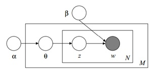
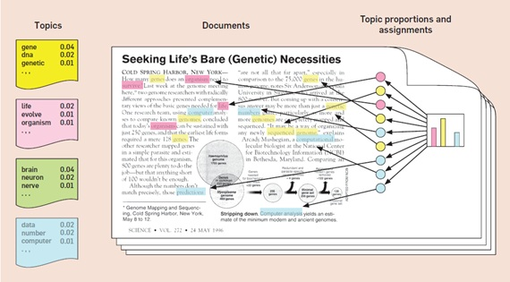
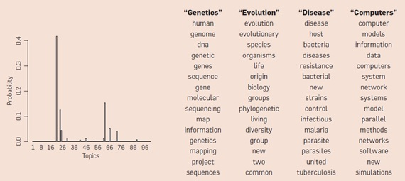

Topic Modelling
Contents
Topic Modelling#
Install & Import Library#
Jika anda ingin menjalankan notebook secara offline seperti Jupyter Notebook, pastikan perangkat anda sudah terinstall library yang dibutuhkan. Jika anda ingin menjalankan notebook secara online seperti Google Colaboratory, pastikan notebook tersebut sudah terinstall library yang dibutuhkan. Library yang dibutuhkan dalam proyek ini, yaitu:
Scrapy
OS
Regex
Pandas
NLTK
Sklearn
Sastrawi
Wordcloud
# Import Library
import os
import regex as re
import pandas as pd
import nltk
from sklearn.decomposition import TruncatedSVD
from sklearn.feature_extraction.text import TfidfVectorizer
from Sastrawi.Stemmer.StemmerFactory import StemmerFactory
from sklearn.decomposition import LatentDirichletAllocation
from nltk.corpus import stopwords
from nltk.tokenize import word_tokenize
from wordcloud import WordCloud
import matplotlib.pyplot as plt
# Install NLTK Corpus
nltk.download('stopwords')
nltk.download('punkt')
[nltk_data] Downloading package stopwords to
[nltk_data] C:\Users\Acer\AppData\Roaming\nltk_data...
[nltk_data] Package stopwords is already up-to-date!
[nltk_data] Downloading package punkt to
[nltk_data] C:\Users\Acer\AppData\Roaming\nltk_data...
[nltk_data] Package punkt is already up-to-date!
True
Crawling Data#
Create Scrapy Project#
Pada bagian ini digunakan untuk membuat proyek library Scrapy dan memindah posisi direktori. Proyek library Scrapy diberi nama crawlproject. Posisi direktori dipindah ke crawlproject/crawlproject/spiders
# Membuat proyek library Scrapy
!scrapy startproject crawlproject
Error: scrapy.cfg already exists in D:\Kuliah\Semester 6\Penambangan dan Pencarian Web\jupyter-book\PPW\crawlproject
# Melihat posisi direktori saat ini
os.getcwd()
'D:\\Kuliah\\Semester 6\\Penambangan dan Pencarian Web\\jupyter-book\\PPW'
# Mengubah posisi direktori saat ini ke crawlproject/crawlproject/spiders
# Fungsinya agar bisa menjalankan file proyek library Scrapy
os.chdir('crawlproject/crawlproject/spiders')
os.getcwd()
'D:\\Kuliah\\Semester 6\\Penambangan dan Pencarian Web\\jupyter-book\\PPW\\crawlproject\\crawlproject\\spiders'
Crawling Link PTA#
Pada bagian ini digunakan untuk membuat dan menjalankan program python. Program tersebut digunakan untuk melakukan crawling 40 link tugas akhir teknik informatika. Untuk melakukan crawling menggunakan library scrapy.
%%writefile -a link.py
# Membuat file link.py
# File link.py digunakan untuk crawling link tugas akhir
import scrapy
class QuotesSpider(scrapy.Spider):
name = "quotes"
def start_requests(self):
start_urls = ['https://pta.trunojoyo.ac.id/c_search/byprod/10/1']
for i in range (2,9):
tambah = 'https://pta.trunojoyo.ac.id/c_search/byprod/10/'+ str(i)
start_urls.append(tambah)
for url in start_urls:
yield scrapy.Request(url=url, callback=self.parse)
def parse(self, response):
for i in range(1, 6):
yield {
'link':response.css('#content_journal > ul > li:nth-child(' +str(i)+ ') > div:nth-child(3) > a::attr(href)').extract()
}
Appending to link.py
# Menjalankan file link.py untuk melakukan proses crawling link tugas akhir
# Hasil akan disimpan dalam file link.csv
# File link.csv digunakan untuk melakukan crawling detail tugas akhir
!scrapy runspider link.py -o link.csv
C:\Python310\lib\site-packages\scrapy\spiderloader.py:37: UserWarning: There are several spiders with the same name:
QuotesSpider named 'quotes' (in crawlproject.spiders.detail)
QuotesSpider named 'quotes' (in crawlproject.spiders.link)
This can cause unexpected behavior.
warnings.warn(
2022-06-29 22:20:51 [scrapy.utils.log] INFO: Scrapy 2.6.1 started (bot: crawlproject)
2022-06-29 22:20:51 [scrapy.utils.log] INFO: Versions: lxml 4.8.0.0, libxml2 2.9.12, cssselect 1.1.0, parsel 1.6.0, w3lib 1.22.0, Twisted 22.2.0, Python 3.10.1 (tags/v3.10.1:2cd268a, Dec 6 2021, 19:10:37) [MSC v.1929 64 bit (AMD64)], pyOpenSSL 22.0.0 (OpenSSL 1.1.1m 14 Dec 2021), cryptography 36.0.1, Platform Windows-10-10.0.19044-SP0
2022-06-29 22:20:51 [scrapy.crawler] INFO: Overridden settings:
{'BOT_NAME': 'crawlproject',
'NEWSPIDER_MODULE': 'crawlproject.spiders',
'ROBOTSTXT_OBEY': True,
'SPIDER_LOADER_WARN_ONLY': True,
'SPIDER_MODULES': ['crawlproject.spiders']}
2022-06-29 22:20:51 [scrapy.utils.log] DEBUG: Using reactor: twisted.internet.selectreactor.SelectReactor
2022-06-29 22:20:51 [scrapy.extensions.telnet] INFO: Telnet Password: 0c1babab7d282c3c
2022-06-29 22:20:51 [scrapy.middleware] INFO: Enabled extensions:
['scrapy.extensions.corestats.CoreStats',
'scrapy.extensions.telnet.TelnetConsole',
'scrapy.extensions.feedexport.FeedExporter',
'scrapy.extensions.logstats.LogStats']
2022-06-29 22:20:51 [scrapy.middleware] INFO: Enabled downloader middlewares:
['scrapy.downloadermiddlewares.robotstxt.RobotsTxtMiddleware',
'scrapy.downloadermiddlewares.httpauth.HttpAuthMiddleware',
'scrapy.downloadermiddlewares.downloadtimeout.DownloadTimeoutMiddleware',
'scrapy.downloadermiddlewares.defaultheaders.DefaultHeadersMiddleware',
'scrapy.downloadermiddlewares.useragent.UserAgentMiddleware',
'scrapy.downloadermiddlewares.retry.RetryMiddleware',
'scrapy.downloadermiddlewares.redirect.MetaRefreshMiddleware',
'scrapy.downloadermiddlewares.httpcompression.HttpCompressionMiddleware',
'scrapy.downloadermiddlewares.redirect.RedirectMiddleware',
'scrapy.downloadermiddlewares.cookies.CookiesMiddleware',
'scrapy.downloadermiddlewares.httpproxy.HttpProxyMiddleware',
'scrapy.downloadermiddlewares.stats.DownloaderStats']
2022-06-29 22:20:51 [scrapy.middleware] INFO: Enabled spider middlewares:
['scrapy.spidermiddlewares.httperror.HttpErrorMiddleware',
'scrapy.spidermiddlewares.offsite.OffsiteMiddleware',
'scrapy.spidermiddlewares.referer.RefererMiddleware',
'scrapy.spidermiddlewares.urllength.UrlLengthMiddleware',
'scrapy.spidermiddlewares.depth.DepthMiddleware']
2022-06-29 22:20:51 [scrapy.middleware] INFO: Enabled item pipelines:
[]
2022-06-29 22:20:51 [scrapy.core.engine] INFO: Spider opened
2022-06-29 22:20:51 [scrapy.extensions.logstats] INFO: Crawled 0 pages (at 0 pages/min), scraped 0 items (at 0 items/min)
2022-06-29 22:20:51 [scrapy.extensions.telnet] INFO: Telnet console listening on 127.0.0.1:6023
2022-06-29 22:20:52 [scrapy.core.engine] DEBUG: Crawled (200) <GET https://pta.trunojoyo.ac.id/robots.txt> (referer: None)
2022-06-29 22:20:53 [filelock] DEBUG: Attempting to acquire lock 1867958981232 on C:\Users\Acer\.cache\python-tldextract\3.10.1.final__Python310__a9c9a9__tldextract-3.2.0\publicsuffix.org-tlds\de84b5ca2167d4c83e38fb162f2e8738.tldextract.json.lock
2022-06-29 22:20:53 [filelock] DEBUG: Lock 1867958981232 acquired on C:\Users\Acer\.cache\python-tldextract\3.10.1.final__Python310__a9c9a9__tldextract-3.2.0\publicsuffix.org-tlds\de84b5ca2167d4c83e38fb162f2e8738.tldextract.json.lock
2022-06-29 22:20:53 [filelock] DEBUG: Attempting to acquire lock 1867959307568 on C:\Users\Acer\.cache\python-tldextract\3.10.1.final__Python310__a9c9a9__tldextract-3.2.0\urls\62bf135d1c2f3d4db4228b9ecaf507a2.tldextract.json.lock
2022-06-29 22:20:53 [filelock] DEBUG: Lock 1867959307568 acquired on C:\Users\Acer\.cache\python-tldextract\3.10.1.final__Python310__a9c9a9__tldextract-3.2.0\urls\62bf135d1c2f3d4db4228b9ecaf507a2.tldextract.json.lock
2022-06-29 22:20:53 [filelock] DEBUG: Attempting to release lock 1867959307568 on C:\Users\Acer\.cache\python-tldextract\3.10.1.final__Python310__a9c9a9__tldextract-3.2.0\urls\62bf135d1c2f3d4db4228b9ecaf507a2.tldextract.json.lock
2022-06-29 22:20:53 [filelock] DEBUG: Lock 1867959307568 released on C:\Users\Acer\.cache\python-tldextract\3.10.1.final__Python310__a9c9a9__tldextract-3.2.0\urls\62bf135d1c2f3d4db4228b9ecaf507a2.tldextract.json.lock
2022-06-29 22:20:53 [filelock] DEBUG: Attempting to release lock 1867958981232 on C:\Users\Acer\.cache\python-tldextract\3.10.1.final__Python310__a9c9a9__tldextract-3.2.0\publicsuffix.org-tlds\de84b5ca2167d4c83e38fb162f2e8738.tldextract.json.lock
2022-06-29 22:20:53 [filelock] DEBUG: Lock 1867958981232 released on C:\Users\Acer\.cache\python-tldextract\3.10.1.final__Python310__a9c9a9__tldextract-3.2.0\publicsuffix.org-tlds\de84b5ca2167d4c83e38fb162f2e8738.tldextract.json.lock
2022-06-29 22:20:53 [scrapy.core.engine] DEBUG: Crawled (200) <GET https://pta.trunojoyo.ac.id/c_search/byprod/10/1> (referer: None)
2022-06-29 22:20:53 [scrapy.core.engine] DEBUG: Crawled (200) <GET https://pta.trunojoyo.ac.id/c_search/byprod/10/2> (referer: None)
2022-06-29 22:20:53 [scrapy.core.engine] DEBUG: Crawled (200) <GET https://pta.trunojoyo.ac.id/c_search/byprod/10/3> (referer: None)
2022-06-29 22:20:53 [scrapy.core.scraper] DEBUG: Scraped from <200 https://pta.trunojoyo.ac.id/c_search/byprod/10/1>
{'link': ['https://pta.trunojoyo.ac.id/welcome/detail/040411100468']}
2022-06-29 22:20:53 [scrapy.core.scraper] DEBUG: Scraped from <200 https://pta.trunojoyo.ac.id/c_search/byprod/10/1>
{'link': ['https://pta.trunojoyo.ac.id/welcome/detail/040411100476']}
2022-06-29 22:20:53 [scrapy.core.scraper] DEBUG: Scraped from <200 https://pta.trunojoyo.ac.id/c_search/byprod/10/1>
{'link': ['https://pta.trunojoyo.ac.id/welcome/detail/040411100480']}
2022-06-29 22:20:53 [scrapy.core.scraper] DEBUG: Scraped from <200 https://pta.trunojoyo.ac.id/c_search/byprod/10/1>
{'link': ['https://pta.trunojoyo.ac.id/welcome/detail/070411100070']}
2022-06-29 22:20:53 [scrapy.core.scraper] DEBUG: Scraped from <200 https://pta.trunojoyo.ac.id/c_search/byprod/10/1>
{'link': ['https://pta.trunojoyo.ac.id/welcome/detail/080411100115']}
2022-06-29 22:20:53 [scrapy.core.engine] DEBUG: Crawled (200) <GET https://pta.trunojoyo.ac.id/c_search/byprod/10/6> (referer: None)
2022-06-29 22:20:53 [scrapy.core.scraper] DEBUG: Scraped from <200 https://pta.trunojoyo.ac.id/c_search/byprod/10/2>
{'link': ['https://pta.trunojoyo.ac.id/welcome/detail/070411100007']}
2022-06-29 22:20:53 [scrapy.core.scraper] DEBUG: Scraped from <200 https://pta.trunojoyo.ac.id/c_search/byprod/10/2>
{'link': ['https://pta.trunojoyo.ac.id/welcome/detail/070411100126']}
2022-06-29 22:20:53 [scrapy.core.scraper] DEBUG: Scraped from <200 https://pta.trunojoyo.ac.id/c_search/byprod/10/2>
{'link': ['https://pta.trunojoyo.ac.id/welcome/detail/070411100109']}
2022-06-29 22:20:53 [scrapy.core.scraper] DEBUG: Scraped from <200 https://pta.trunojoyo.ac.id/c_search/byprod/10/2>
{'link': ['https://pta.trunojoyo.ac.id/welcome/detail/080411100083']}
2022-06-29 22:20:53 [scrapy.core.scraper] DEBUG: Scraped from <200 https://pta.trunojoyo.ac.id/c_search/byprod/10/2>
{'link': ['https://pta.trunojoyo.ac.id/welcome/detail/070411100092']}
2022-06-29 22:20:53 [scrapy.core.scraper] DEBUG: Scraped from <200 https://pta.trunojoyo.ac.id/c_search/byprod/10/3>
{'link': ['https://pta.trunojoyo.ac.id/welcome/detail/070411100120']}
2022-06-29 22:20:53 [scrapy.core.scraper] DEBUG: Scraped from <200 https://pta.trunojoyo.ac.id/c_search/byprod/10/3>
{'link': ['https://pta.trunojoyo.ac.id/welcome/detail/070411100143']}
2022-06-29 22:20:53 [scrapy.core.scraper] DEBUG: Scraped from <200 https://pta.trunojoyo.ac.id/c_search/byprod/10/3>
{'link': ['https://pta.trunojoyo.ac.id/welcome/detail/070411100037']}
2022-06-29 22:20:53 [scrapy.core.scraper] DEBUG: Scraped from <200 https://pta.trunojoyo.ac.id/c_search/byprod/10/3>
{'link': ['https://pta.trunojoyo.ac.id/welcome/detail/070411100079']}
2022-06-29 22:20:53 [scrapy.core.scraper] DEBUG: Scraped from <200 https://pta.trunojoyo.ac.id/c_search/byprod/10/3>
{'link': ['https://pta.trunojoyo.ac.id/welcome/detail/070411100050']}
2022-06-29 22:20:53 [scrapy.core.scraper] DEBUG: Scraped from <200 https://pta.trunojoyo.ac.id/c_search/byprod/10/6>
{'link': ['https://pta.trunojoyo.ac.id/welcome/detail/080411100086']}
2022-06-29 22:20:53 [scrapy.core.scraper] DEBUG: Scraped from <200 https://pta.trunojoyo.ac.id/c_search/byprod/10/6>
{'link': ['https://pta.trunojoyo.ac.id/welcome/detail/080411100052']}
2022-06-29 22:20:53 [scrapy.core.scraper] DEBUG: Scraped from <200 https://pta.trunojoyo.ac.id/c_search/byprod/10/6>
{'link': ['https://pta.trunojoyo.ac.id/welcome/detail/060411100818']}
2022-06-29 22:20:53 [scrapy.core.scraper] DEBUG: Scraped from <200 https://pta.trunojoyo.ac.id/c_search/byprod/10/6>
{'link': ['https://pta.trunojoyo.ac.id/welcome/detail/080411100125']}
2022-06-29 22:20:53 [scrapy.core.scraper] DEBUG: Scraped from <200 https://pta.trunojoyo.ac.id/c_search/byprod/10/6>
{'link': ['https://pta.trunojoyo.ac.id/welcome/detail/080411100029']}
2022-06-29 22:20:53 [scrapy.core.engine] DEBUG: Crawled (200) <GET https://pta.trunojoyo.ac.id/c_search/byprod/10/7> (referer: None)
2022-06-29 22:20:53 [scrapy.core.scraper] DEBUG: Scraped from <200 https://pta.trunojoyo.ac.id/c_search/byprod/10/7>
{'link': ['https://pta.trunojoyo.ac.id/welcome/detail/060411100755']}
2022-06-29 22:20:53 [scrapy.core.scraper] DEBUG: Scraped from <200 https://pta.trunojoyo.ac.id/c_search/byprod/10/7>
{'link': ['https://pta.trunojoyo.ac.id/welcome/detail/080411100102']}
2022-06-29 22:20:53 [scrapy.core.scraper] DEBUG: Scraped from <200 https://pta.trunojoyo.ac.id/c_search/byprod/10/7>
{'link': ['https://pta.trunojoyo.ac.id/welcome/detail/050411100662']}
2022-06-29 22:20:53 [scrapy.core.engine] DEBUG: Crawled (200) <GET https://pta.trunojoyo.ac.id/c_search/byprod/10/4> (referer: None)
2022-06-29 22:20:53 [scrapy.core.scraper] DEBUG: Scraped from <200 https://pta.trunojoyo.ac.id/c_search/byprod/10/7>
{'link': ['https://pta.trunojoyo.ac.id/welcome/detail/080411100014']}
2022-06-29 22:20:53 [scrapy.core.scraper] DEBUG: Scraped from <200 https://pta.trunojoyo.ac.id/c_search/byprod/10/7>
{'link': ['https://pta.trunojoyo.ac.id/welcome/detail/080411100041']}
2022-06-29 22:20:53 [scrapy.core.engine] DEBUG: Crawled (200) <GET https://pta.trunojoyo.ac.id/c_search/byprod/10/8> (referer: None)
2022-06-29 22:20:53 [scrapy.core.engine] DEBUG: Crawled (200) <GET https://pta.trunojoyo.ac.id/c_search/byprod/10/5> (referer: None)
2022-06-29 22:20:54 [scrapy.core.scraper] DEBUG: Scraped from <200 https://pta.trunojoyo.ac.id/c_search/byprod/10/4>
{'link': ['https://pta.trunojoyo.ac.id/welcome/detail/070411100124']}
2022-06-29 22:20:54 [scrapy.core.scraper] DEBUG: Scraped from <200 https://pta.trunojoyo.ac.id/c_search/byprod/10/4>
{'link': ['https://pta.trunojoyo.ac.id/welcome/detail/070411100072']}
2022-06-29 22:20:54 [scrapy.core.scraper] DEBUG: Scraped from <200 https://pta.trunojoyo.ac.id/c_search/byprod/10/4>
{'link': ['https://pta.trunojoyo.ac.id/welcome/detail/070411100152']}
2022-06-29 22:20:54 [scrapy.core.scraper] DEBUG: Scraped from <200 https://pta.trunojoyo.ac.id/c_search/byprod/10/4>
{'link': ['https://pta.trunojoyo.ac.id/welcome/detail/070411100114']}
2022-06-29 22:20:54 [scrapy.core.scraper] DEBUG: Scraped from <200 https://pta.trunojoyo.ac.id/c_search/byprod/10/4>
{'link': ['https://pta.trunojoyo.ac.id/welcome/detail/070411100036']}
2022-06-29 22:20:54 [scrapy.core.scraper] DEBUG: Scraped from <200 https://pta.trunojoyo.ac.id/c_search/byprod/10/8>
{'link': ['https://pta.trunojoyo.ac.id/welcome/detail/080411100012']}
2022-06-29 22:20:54 [scrapy.core.scraper] DEBUG: Scraped from <200 https://pta.trunojoyo.ac.id/c_search/byprod/10/8>
{'link': ['https://pta.trunojoyo.ac.id/welcome/detail/070411100170']}
2022-06-29 22:20:54 [scrapy.core.scraper] DEBUG: Scraped from <200 https://pta.trunojoyo.ac.id/c_search/byprod/10/8>
{'link': ['https://pta.trunojoyo.ac.id/welcome/detail/050411100558']}
2022-06-29 22:20:54 [scrapy.core.scraper] DEBUG: Scraped from <200 https://pta.trunojoyo.ac.id/c_search/byprod/10/8>
{'link': ['https://pta.trunojoyo.ac.id/welcome/detail/070411100133']}
2022-06-29 22:20:54 [scrapy.core.scraper] DEBUG: Scraped from <200 https://pta.trunojoyo.ac.id/c_search/byprod/10/8>
{'link': ['https://pta.trunojoyo.ac.id/welcome/detail/080411100010']}
2022-06-29 22:20:54 [scrapy.core.scraper] DEBUG: Scraped from <200 https://pta.trunojoyo.ac.id/c_search/byprod/10/5>
{'link': ['https://pta.trunojoyo.ac.id/welcome/detail/070411100029']}
2022-06-29 22:20:54 [scrapy.core.scraper] DEBUG: Scraped from <200 https://pta.trunojoyo.ac.id/c_search/byprod/10/5>
{'link': ['https://pta.trunojoyo.ac.id/welcome/detail/060411100824']}
2022-06-29 22:20:54 [scrapy.core.scraper] DEBUG: Scraped from <200 https://pta.trunojoyo.ac.id/c_search/byprod/10/5>
{'link': ['https://pta.trunojoyo.ac.id/welcome/detail/060411100772']}
2022-06-29 22:20:54 [scrapy.core.scraper] DEBUG: Scraped from <200 https://pta.trunojoyo.ac.id/c_search/byprod/10/5>
{'link': ['https://pta.trunojoyo.ac.id/welcome/detail/080411100001']}
2022-06-29 22:20:54 [scrapy.core.scraper] DEBUG: Scraped from <200 https://pta.trunojoyo.ac.id/c_search/byprod/10/5>
{'link': ['https://pta.trunojoyo.ac.id/welcome/detail/060411100801']}
2022-06-29 22:20:54 [scrapy.core.engine] INFO: Closing spider (finished)
2022-06-29 22:20:54 [scrapy.extensions.feedexport] INFO: Stored csv feed (40 items) in: link.csv
2022-06-29 22:20:54 [scrapy.statscollectors] INFO: Dumping Scrapy stats:
{'downloader/request_bytes': 2141,
'downloader/request_count': 9,
'downloader/request_method_count/GET': 9,
'downloader/response_bytes': 42518,
'downloader/response_count': 9,
'downloader/response_status_count/200': 9,
'elapsed_time_seconds': 2.248695,
'feedexport/success_count/FileFeedStorage': 1,
'finish_reason': 'finished',
'finish_time': datetime.datetime(2022, 6, 29, 15, 20, 54, 49940),
'httpcompression/response_bytes': 141698,
'httpcompression/response_count': 8,
'item_scraped_count': 40,
'log_count/DEBUG': 58,
'log_count/INFO': 11,
'response_received_count': 9,
'robotstxt/request_count': 1,
'robotstxt/response_count': 1,
'robotstxt/response_status_count/200': 1,
'scheduler/dequeued': 8,
'scheduler/dequeued/memory': 8,
'scheduler/enqueued': 8,
'scheduler/enqueued/memory': 8,
'start_time': datetime.datetime(2022, 6, 29, 15, 20, 51, 801245)}
2022-06-29 22:20:54 [scrapy.core.engine] INFO: Spider closed (finished)
Crawling Detail PTA#
Pada bagian ini digunakan untuk membuat dan menjalankan program python. Program tersebut digunakan untuk melakukan crawling 40 detail tugas akhir informatika. Untuk melakukan crawling menggunakan library scrapy.
%%writefile -a detail.py
# Membuat file detail.py
# File detail.py digunakan untuk crawling detail tugas akhir
import scrapy
import pandas as pd
class QuotesSpider(scrapy.Spider):
name = "quotes"
def start_requests(self):
dataCSV = pd.read_csv('link.csv')
indexData = dataCSV.iloc[:, [0]].values
arrayData = []
for i in indexData:
ambil = i[0]
arrayData.append(ambil)
for url in arrayData:
yield scrapy.Request(url=url, callback=self.parse)
def parse(self, response):
yield {
'judul': response.css('#content_journal > ul > li > div:nth-child(2) > a::text').extract(),
'penulis': response.css('#content_journal > ul > li > div:nth-child(2) > div:nth-child(2) > span::text').extract(),
'pembimbing_1': response.css('#content_journal > ul > li > div:nth-child(2) > div:nth-child(3) > span::text').extract(),
'pembimbing_2': response.css('#content_journal > ul > li > div:nth-child(2) > div:nth-child(4) > span::text').extract(),
'abstrak': response.css('#content_journal > ul > li > div:nth-child(4) > div:nth-child(2) > p::text').extract()
}
Appending to detail.py
# Menjalankan file detail.py untuk melakukan proses crawling detail tugas akhir
# Hasil akan disimpan dalam file detail.csv
# File detail.csv digunakan sebagai dataset utama yang diolah dalam proyek ini
!scrapy runspider detail.py -o detail.csv
C:\Python310\lib\site-packages\scrapy\spiderloader.py:37: UserWarning: There are several spiders with the same name:
QuotesSpider named 'quotes' (in crawlproject.spiders.detail)
QuotesSpider named 'quotes' (in crawlproject.spiders.link)
This can cause unexpected behavior.
warnings.warn(
2022-06-29 22:20:55 [scrapy.utils.log] INFO: Scrapy 2.6.1 started (bot: crawlproject)
2022-06-29 22:20:55 [scrapy.utils.log] INFO: Versions: lxml 4.8.0.0, libxml2 2.9.12, cssselect 1.1.0, parsel 1.6.0, w3lib 1.22.0, Twisted 22.2.0, Python 3.10.1 (tags/v3.10.1:2cd268a, Dec 6 2021, 19:10:37) [MSC v.1929 64 bit (AMD64)], pyOpenSSL 22.0.0 (OpenSSL 1.1.1m 14 Dec 2021), cryptography 36.0.1, Platform Windows-10-10.0.19044-SP0
2022-06-29 22:20:55 [scrapy.crawler] INFO: Overridden settings:
{'BOT_NAME': 'crawlproject',
'NEWSPIDER_MODULE': 'crawlproject.spiders',
'ROBOTSTXT_OBEY': True,
'SPIDER_LOADER_WARN_ONLY': True,
'SPIDER_MODULES': ['crawlproject.spiders']}
2022-06-29 22:20:55 [scrapy.utils.log] DEBUG: Using reactor: twisted.internet.selectreactor.SelectReactor
2022-06-29 22:20:55 [scrapy.extensions.telnet] INFO: Telnet Password: d0fe8e468b10882c
2022-06-29 22:20:55 [scrapy.middleware] INFO: Enabled extensions:
['scrapy.extensions.corestats.CoreStats',
'scrapy.extensions.telnet.TelnetConsole',
'scrapy.extensions.feedexport.FeedExporter',
'scrapy.extensions.logstats.LogStats']
2022-06-29 22:20:55 [scrapy.middleware] INFO: Enabled downloader middlewares:
['scrapy.downloadermiddlewares.robotstxt.RobotsTxtMiddleware',
'scrapy.downloadermiddlewares.httpauth.HttpAuthMiddleware',
'scrapy.downloadermiddlewares.downloadtimeout.DownloadTimeoutMiddleware',
'scrapy.downloadermiddlewares.defaultheaders.DefaultHeadersMiddleware',
'scrapy.downloadermiddlewares.useragent.UserAgentMiddleware',
'scrapy.downloadermiddlewares.retry.RetryMiddleware',
'scrapy.downloadermiddlewares.redirect.MetaRefreshMiddleware',
'scrapy.downloadermiddlewares.httpcompression.HttpCompressionMiddleware',
'scrapy.downloadermiddlewares.redirect.RedirectMiddleware',
'scrapy.downloadermiddlewares.cookies.CookiesMiddleware',
'scrapy.downloadermiddlewares.httpproxy.HttpProxyMiddleware',
'scrapy.downloadermiddlewares.stats.DownloaderStats']
2022-06-29 22:20:55 [scrapy.middleware] INFO: Enabled spider middlewares:
['scrapy.spidermiddlewares.httperror.HttpErrorMiddleware',
'scrapy.spidermiddlewares.offsite.OffsiteMiddleware',
'scrapy.spidermiddlewares.referer.RefererMiddleware',
'scrapy.spidermiddlewares.urllength.UrlLengthMiddleware',
'scrapy.spidermiddlewares.depth.DepthMiddleware']
2022-06-29 22:20:55 [scrapy.middleware] INFO: Enabled item pipelines:
[]
2022-06-29 22:20:55 [scrapy.core.engine] INFO: Spider opened
2022-06-29 22:20:55 [scrapy.extensions.logstats] INFO: Crawled 0 pages (at 0 pages/min), scraped 0 items (at 0 items/min)
2022-06-29 22:20:55 [scrapy.extensions.telnet] INFO: Telnet console listening on 127.0.0.1:6023
2022-06-29 22:20:56 [scrapy.core.engine] DEBUG: Crawled (200) <GET https://pta.trunojoyo.ac.id/robots.txt> (referer: None)
2022-06-29 22:20:56 [filelock] DEBUG: Attempting to acquire lock 2185426509712 on C:\Users\Acer\.cache\python-tldextract\3.10.1.final__Python310__a9c9a9__tldextract-3.2.0\publicsuffix.org-tlds\de84b5ca2167d4c83e38fb162f2e8738.tldextract.json.lock
2022-06-29 22:20:56 [filelock] DEBUG: Lock 2185426509712 acquired on C:\Users\Acer\.cache\python-tldextract\3.10.1.final__Python310__a9c9a9__tldextract-3.2.0\publicsuffix.org-tlds\de84b5ca2167d4c83e38fb162f2e8738.tldextract.json.lock
2022-06-29 22:20:56 [filelock] DEBUG: Attempting to acquire lock 2185426515328 on C:\Users\Acer\.cache\python-tldextract\3.10.1.final__Python310__a9c9a9__tldextract-3.2.0\urls\62bf135d1c2f3d4db4228b9ecaf507a2.tldextract.json.lock
2022-06-29 22:20:56 [filelock] DEBUG: Lock 2185426515328 acquired on C:\Users\Acer\.cache\python-tldextract\3.10.1.final__Python310__a9c9a9__tldextract-3.2.0\urls\62bf135d1c2f3d4db4228b9ecaf507a2.tldextract.json.lock
2022-06-29 22:20:56 [filelock] DEBUG: Attempting to release lock 2185426515328 on C:\Users\Acer\.cache\python-tldextract\3.10.1.final__Python310__a9c9a9__tldextract-3.2.0\urls\62bf135d1c2f3d4db4228b9ecaf507a2.tldextract.json.lock
2022-06-29 22:20:56 [filelock] DEBUG: Lock 2185426515328 released on C:\Users\Acer\.cache\python-tldextract\3.10.1.final__Python310__a9c9a9__tldextract-3.2.0\urls\62bf135d1c2f3d4db4228b9ecaf507a2.tldextract.json.lock
2022-06-29 22:20:56 [filelock] DEBUG: Attempting to release lock 2185426509712 on C:\Users\Acer\.cache\python-tldextract\3.10.1.final__Python310__a9c9a9__tldextract-3.2.0\publicsuffix.org-tlds\de84b5ca2167d4c83e38fb162f2e8738.tldextract.json.lock
2022-06-29 22:20:56 [filelock] DEBUG: Lock 2185426509712 released on C:\Users\Acer\.cache\python-tldextract\3.10.1.final__Python310__a9c9a9__tldextract-3.2.0\publicsuffix.org-tlds\de84b5ca2167d4c83e38fb162f2e8738.tldextract.json.lock
2022-06-29 22:20:56 [scrapy.core.engine] DEBUG: Crawled (200) <GET https://pta.trunojoyo.ac.id/welcome/detail/040411100468> (referer: None)
2022-06-29 22:20:56 [scrapy.core.scraper] DEBUG: Scraped from <200 https://pta.trunojoyo.ac.id/welcome/detail/040411100468>
{'judul': ['PERANCANGAN DAN IMPLEMENTASI SISTEM DATABASE \r\nTERDISTRIBUSI MENGGUNAKAN ORACLE STUDI KASUS \r\nSIAKAD UNIVERSITAS TRUNOJOYO'], 'penulis': ['Penulis : A.Ubaidillah S.Kom'], 'pembimbing_1': ['Dosen Pembimbing I : Budi Setyono M.T'], 'pembimbing_2': ['Dosen Pembimbing II :Hermawan S.T'], 'abstrak': ['Sistem informasi akademik (SIAKAD) merupakan sistem informasi yang berfungsi menangani pengelolaan dan penyajian data-data akademik, yang oleh pihak fakultas SIAKAD dianggap sangat penting dalam memberikan pelayanan mahasiswa yang membutuhkan informasi akademik. Di Universitas Trunojoyo telah tersedia SIAKAD, namun masih menggunakan database terpusat. Sistem seperti ini memberikan kelebihan yaitu perawatannya mudah selain itu juga membutuhkan sedikit biaya, namun sistem tersebut juga berpotensi mengahadapi kendala-kendala yaitu dalam proses transaksi data karena padatnya jaringan yang menuju database SIAKAD, kelambatan dalam pemrosesan respon query dikarenakan data yang tersimpan semakin besar dan pemrosesan semakin kompleks, dan juga memiliki kelemahan dalam hal ketersediaan data. Untuk itu sistem seperti ini memerlukan pengembangan sistem database yang lebih baik dengan menggunakan sistem databases terdistribusi pada masing-masing fakultas yang dapat dijadikan solusi bagi permasalahan di atas. Karena dalam basisdata terdistribusi terdapat keuntungan yang tidak dimiliki oleh basisdata terpusat yaitu pengawasan distribusi, reability, availability, kecepatan dalam pemrosesan query dan otonomi local']}
2022-06-29 22:20:56 [scrapy.core.engine] DEBUG: Crawled (200) <GET https://pta.trunojoyo.ac.id/welcome/detail/040411100480> (referer: None)
2022-06-29 22:20:56 [scrapy.core.engine] DEBUG: Crawled (200) <GET https://pta.trunojoyo.ac.id/welcome/detail/080411100115> (referer: None)
2022-06-29 22:20:57 [scrapy.core.engine] DEBUG: Crawled (200) <GET https://pta.trunojoyo.ac.id/welcome/detail/080411100102> (referer: None)
2022-06-29 22:20:57 [scrapy.core.scraper] DEBUG: Scraped from <200 https://pta.trunojoyo.ac.id/welcome/detail/040411100480>
{'judul': ['RANCANG BANGUN APLIKASI PROXY SERVER UNTUK\r\nENKRIPSI KODE HTML MENGGUNAKAN\r\nALGORITMA BLOWFISH'], 'penulis': ['Penulis : Akhmad Suyandi, S.Kom'], 'pembimbing_1': ['Dosen Pembimbing I : Drs. Budi Soesilo, M.T'], 'pembimbing_2': ['Dosen Pembimbing II :Hermawan, ST, MT'], 'abstrak': ['Web server adalah sebuah perangkat lunak server yang berfungsi\r\nmenerima permintaan HTTP atau HTTPS dari web client dan\r\nmengirimkan jawaban dalam bentuk halaman-halaman web yang\r\numumnya berbentuk dokumen HTML. Dokumen HTML yang dikirim\r\nmerupakan dokumen yang dibentuk dari bahasa markup yang plaintext.\r\nArtinya, dokumen berisi kode-kode HTML murni tanpa proses enkripsi.\r\nTujuan dari penelitan ini adalah membuat sebuah aplikasi proxy\r\nserver yang menerima permintaan HTTP dari web client dan\r\nmeneruskannya ke web server. Kemudian aplikasi ini akan menerima\r\nrespon dari server dan melakukan proses enkripsi pada dokumen HTML\r\nterlebih dahulu. Sehingga dokumen HTML yang dikirim kepada web\r\nclient sudah berbentuk dokumen HTML yang terenkripsi. Web client\r\ndisini bisa berupa aplikasi seperti Internet Explorer, Mozilla Firefox,\r\natau Opera. Aplikasi-aplikasi tersebut biasa dikenal dengan sebutan web\r\nbrowser.\r\nKetika web browser menerima dokumen HTML yang terenkripsi\r\ndari aplikasi proxy server, maka JavaScript Engine yang ada di web\r\nbrowser akan melakukan proses dekripsi sekaligus rendering sehingga\r\ndokumen akan ditampilkan sesuai dengan aslinya. Namun apabila kode\r\ndari dokumen HTML tersebut dilihat melalui menu view source yang\r\nada di web browser akan didapatkan dokumen HTML yang tetap\r\nterenkripsi.']}
2022-06-29 22:20:57 [scrapy.core.scraper] DEBUG: Scraped from <200 https://pta.trunojoyo.ac.id/welcome/detail/080411100115>
{'judul': ['SISTEM AUGMENTED REALITY ANIMASI BENDA BERGERAK MENGGUNAKAN FLARTOOLKIT'], 'penulis': ['Penulis : Septian Rahman Hakim'], 'pembimbing_1': ['Dosen Pembimbing I : Arik Kurniawati, S.Kom., M.T.'], 'pembimbing_2': ['Dosen Pembimbing II :Haryanto, S.T., M.T.'], 'abstrak': ['Seiring perkembangan teknologi yang ada didunia, muncul teknologi yang disebut augmented reality. Augmented Reality (AR) merupakan upaya untuk menggabungkan dunia maya dan dunia virtual yang dibuat melalui komputer sehingga batas antara keduanya menjadi sangat tipis. Head-Mounted Display (HMD) merupakan contoh hasil dari penelitian tentang Augmented Reality, ini merupakan satu-satunya peralatan dasar dalam teknologi-teknologi terbaru. Seiring berjalannya waktu, augmented reality berkembang pesat sehingga memungkinkan pengembangan aplikasi ini di berbagai bidang.\r\n\r\nUntuk mengembangkan AR banyak sekali library pendukung yang dapat digunakan. FlarToolKit adalah salah satunya. FlarToolKit merupakan library pendukung augmented reality pada platform flash.\r\n\r\nBerdasarkan sistem AR animasi benda bergerak yang dibuat adalah animasi bergerak permainan pingpong dimana telah dikolaborasikan dengan augmented reality untuk menggerakkan setiap langkah dari playernya. Interaksi antar obyek tersebut dapat dilihat dari gerak bola yang dapat dipukul dengan obyek virtual yang ditampilkan melalui augmented reality.\r\n']}
2022-06-29 22:20:57 [scrapy.core.scraper] DEBUG: Scraped from <200 https://pta.trunojoyo.ac.id/welcome/detail/080411100102>
{'judul': ['Aplikasi Penilaian Kinerja dengan Metodologi Customer Realtionship Management (CRM)'], 'penulis': ['Penulis : Luthfi Zahro'], 'pembimbing_1': ['Dosen Pembimbing I : Moch. Kautsar Sophan, S.Kom., M.MT'], 'pembimbing_2': ['Dosen Pembimbing II :Dr. Rachmad Hidayat, ST., MT'], 'abstrak': ['Setiap perusahaan mengharapkan adanya hubungan baik dengan pelanggan, begitupun dengan PT. X sebagai perusahaan yang bergerak di bidang minyak dan gas bumi Negara. Pengelolaan hubungan yang baik akan berdampak pada peningkatan citra perusahaan dimata pelanggan. Penilaian kinerja perusahaan dapat diukur dengan menggunakan kriteria dari CRM Scorecard. CRM Scorecard diambil dari Balanced Scorecard (BSC) dengan berfokus pada pelanggan. Adanya penilaian kinerja dengan metode Analytic Network Process (ANP) untuk pembobotan, PT. X dapat menilai kinerja perusahaan dengan ditunjukkan oleh Traffic Light System sebagai hasilnya. Hasil scoring KPI menunjukkan bahwa terdapat 2 KPI yang berada pada level buruk, yaitu Ekuitas Pelanggan dan Sistem Penghargaan. Kedua KPI ini diperlukan perhatian yang lebih. Indikator yang berada pada level cukup ada 3 KPI, yaitu yaitu Perluasan Pelanggan, Teknologi Informasi, dan Struktur Organisasi. Perusahaan harus berhati-hati dengan berbagai macam kemungkinan yang dapat terjadi. Indikator yang berada pada level baik ada 9 KPI, yaitu Profitabilitas, Kesetiaan Pelanggan, Kepuasan Pelanggan, Nilai Hubungan dengan Pelanggan, Perolehan Pelanggan, Mempertahankan Pelanggan, Peranan Manajemen, Pelatihan, dan Kerjasama.\r\n\r\nKata Kunci: Sistem Penilaian Kinerja, CRM Scorecard, Analytic Network Process (ANP), Key Performance Indicator (KPI)\r\n']}
2022-06-29 22:20:57 [scrapy.core.engine] DEBUG: Crawled (200) <GET https://pta.trunojoyo.ac.id/welcome/detail/040411100476> (referer: None)
2022-06-29 22:20:57 [scrapy.core.scraper] DEBUG: Scraped from <200 https://pta.trunojoyo.ac.id/welcome/detail/040411100476>
{'judul': ['APLIKASI KONTROL DAN MONITORING JARINGAN KOMPUTER BERBASIS MOBILE'], 'penulis': ['Penulis : M. Basith Ardianto,'], 'pembimbing_1': ['Dosen Pembimbing I : Drs. Budi Soesilo, MT'], 'pembimbing_2': ['Dosen Pembimbing II :Koko Joni, ST'], 'abstrak': ['Berjalannya koneksi jaringan komputer dengan lancar dan tanpa gangguan merupakan harapan seluruh penggunanya,\r\nterutama pihak yang bertanggung jawab pada bidang itu, yakni administrator jaringan. Namun tidak selamanya koneksi\r\njaringan dapat berjalan dengan lancar tanpa adanya gangguan. Kenyataan di lapangan terutama pada jaringan komputer skala\r\nbesar, berpotensi besar terjadi gangguan atau bahkan kerusakan koneksi jaringan komputer.\r\nHal ini rata - rata disebabkan banyaknya penggunaan serta padatnya traffic data dalam jaringan komputer itu sendiri.\r\nOleh karena itu untuk menjaga bahkan meningkatkan kualitas layanan koneksi jaringan maka diperlukan adanya akses kontrol\r\ndan monitoring pada level administrator jaringan secara real-time berbasis mobile, yang dapat mengatur dan mengetahui\r\ninformasi tentang koneksi jaringan dan dapat diakses setiap saat.\r\nPihak administrator jaringan dituntut untuk terlebih dahulu mengetahui adanya gangguan atau bahkan terputusnya\r\nkoneksi jaringan walaupun administrator tidak berada di tempat kontrol dan monitoring, Dengan adanya sistem kontrol dan\r\nmonitoring berbasis mobile, diharapkan dapat membantu tugas administrator dalam mengontrol dan memantau jaringan serta\r\ndalam mengambil kebijakan atas node – node yang terkoneksi pada jaringan yakni memanajemen koneksi, port dan bandwidth\r\nsetiap saat dan secara mobile. agar dengan segera dapat melakukan pembenahan ketika terjadi gangguan jaringan sebelum\r\npemakai jaringan (klien) melakukan pengaduan atas adanya gangguan.\r\nKata Kunci : Administrator Jaringan, Koneksi Jaringan, Akses Kontrol dan Monitoring.']}
2022-06-29 22:20:57 [scrapy.core.engine] DEBUG: Crawled (200) <GET https://pta.trunojoyo.ac.id/welcome/detail/070411100070> (referer: None)
2022-06-29 22:20:57 [scrapy.core.engine] DEBUG: Crawled (200) <GET https://pta.trunojoyo.ac.id/welcome/detail/060411100755> (referer: None)
2022-06-29 22:20:57 [scrapy.core.engine] DEBUG: Crawled (200) <GET https://pta.trunojoyo.ac.id/welcome/detail/050411100662> (referer: None)
2022-06-29 22:20:57 [scrapy.core.scraper] DEBUG: Scraped from <200 https://pta.trunojoyo.ac.id/welcome/detail/070411100070>
{'judul': ['SISTEM PENDUKUNG KEPUTUSAN OPTIMASI PENJADWALAN MATAKULIAH UNTUK PENGGUNAAN RUANGAN KULIAH BERSAMA DI UNIVERSITAS TRUNOJOYO MADURA MENGGUNAKAN ALGORITMA \r\nGENETIKA'], 'penulis': ['Penulis : Heri Supriyanto'], 'pembimbing_1': ['Dosen Pembimbing I : Mulaab, S.Si., M.Kom'], 'pembimbing_2': ['Dosen Pembimbing II :Firli Irhamni, ST., M.Kom'], 'abstrak': ['Penjadwalan kuliah di Perguruan Tinggi merupakan masalah yang kompleks. Dalam permasalahan tersebut terdapat beberapa variabel yang harus dipertimbangkan supaya mendapatkan jadwal yang \r\noptimal. Di dalam penyusunan jadwal kuliah ini terdapat sangat banyak kemungkinan yang selayaknya dicoba untuk menemukan penjadwalan yang terbaik. Karena itu dibutuhkan metode optimasi yang dapat diterapkan untuk mengerjakan penjadwalan mata kuliah ini. Metode yang dapat digunakan untuk menyelesaikan permasalahan tersebut adalah dengan menggunakan Algoritma Genetika. Tugas Akhir ini \r\nbertujuan untuk membuat suatu sistem yang dapat membuat jadwal matakuliah secara otomatis dan hasilnya optimal. Dari hasil penelitian yang dilakukan algoritma genetika mampu membuat jadwal dengan \r\noptimal yang dibuktikan dari nilai fitness yang memiliki nilai 1 secara otomatis jadwal yang dibentuk akan optimal. Semoga adanya aplikasi ini diharapkan bisa mempermudah didalam pembuatan penjadwalan \r\nmatakuliah dengan mudah dan cepat. \r\n \r\nKata Kunci: Algoritma Genetika, Optimasi, Penjadwalan.']}
2022-06-29 22:20:57 [scrapy.core.scraper] DEBUG: Scraped from <200 https://pta.trunojoyo.ac.id/welcome/detail/060411100755>
{'judul': ['RANCANG BANGUN MANAJEMEN PEMBELAJARAN DAN TES TOEFL BERBASIS MOBILE'], 'penulis': ['Penulis : Susanto'], 'pembimbing_1': ['Dosen Pembimbing I : Hermawan S.T.,M.Kom'], 'pembimbing_2': ['Dosen Pembimbing II :Andharini Dwi Cahyani S.Kom.,M.Kom'], 'abstrak': ['Penggunaan teknologi mobile saat ini sangat marak, disamping keunggulannya dapat mudah bawa dibawa kemana-mana, teknologi mobile sekarang sangat mudah untuk dieksplorasi, terbukti dengan adanya smartphone yang mempunyai banyak layanan yang dapat bermanfaat bagi para penggunanya. Toefl (Test Of English As A Foreign Languange) sangat dibutuhkan dalam menghadapi kemajuan teknologi saat ini, Kurang besarnya minat masyarakat dalam belajar bahasa inggris dan mengikuti tes-tes Toefl yang ada, berpengaruh pada kemajuan teknologi. Android merupakan subset perangkat lunak untuk perangkat mobile yang meliputi sistem operasi, middleware, dan aplikasi inti yang di release oleh Google. Android SDK adalah tools API (Application Programming Interface) yang digunakan untuk memulai membuat aplikasi pada platform Android dengan menggunakan bahasa pemrograman Java. Eclipse adalah sebuah IDE (Integrated Development Environment) yang digunakan dalam coding aplikasi Android nantinya. Salah satu pemanfaatan teknologi mobile yaitu dengan membuat media pembelajaran dan tes TOEFL baik soal berupa teks dan audio dengan menggunakan teknologi Android, tentunya berbasis mobile. Dengan tes TOEFL, pembelajaran test dan kelebihan listening menu di dalam aplikasi ini, diharapkan akan dapat membatu meningkatkan pemahaman pengguna mengenai tes TOEFL.\r\n\r\nKata Kunci: tes TOEFL, ANDROID, Java , Mobile, SDK\r\n']}
2022-06-29 22:20:57 [scrapy.core.scraper] DEBUG: Scraped from <200 https://pta.trunojoyo.ac.id/welcome/detail/050411100662>
{'judul': ['Kalibrasi Kamera dengan Menggunakan Metode Tsai'], 'penulis': ['Penulis : Bima Iffan Hakim'], 'pembimbing_1': ['Dosen Pembimbing I : Eza Rahmanita, ST., MT'], 'pembimbing_2': ['Dosen Pembimbing II :Meidya Koeshardianto, S.Si., MT'], 'abstrak': ['Teknik kalibrasi sangat berpengaruh terhadap perkembangan computer vision karena setiap proses dalam teknik kalibrasi sangat diperlukan untuk pengolahan lanjutan berbagai macam proses vision. Dengan dilakukannya kalibrasi, proses vision akan menjadi lebih mudah. Dalam prosesnya teknik kalibrasi dilakukan untuk menentukan parameter yang dapat dilakukan untuk proses vision selanjutnya diantaranya rekonstruksi 3D. Penelitian ini mencoba mengangkat kembali teknik kalibrasi kamera klasik yang sangat popular, yaitu teknik kalibrasi kamera dengan menggunakan algoritma Tsai. Sebagai simulasi, hasil parameter yang akan didapat akan digunakan untuk melakukan pengukuran tinggi obyek dengan aplikasi dan kemudian dibandingkan dengan tinggi obyek secara real. Dari hasil ujicoba, didapatkan hasil bahwa tahapan proses kalibrasi kamera dengan metode Tsai berhasil dilakukan. Kemudian data parameter yang didapat, dilakukan simulasi dengan ujicoba sebanyak 5 skenario dengan masing-masing skenario dilakukan dengan 2 percobaan. Hasil yang didapat dari hasil pengukuran dengan aplikasi ternyata masih jauh dari hasil pengukuran secara nyata. Galat relative yang didapat dari perhitungan dengan aplikasi rata-rata hanya 50.6% dari perhitungan secara nyata. Hasil ini disebabkan karena proses pengambilan data awal dengan spesifikasi yang terbatas.\n\nKata kunci : kalibrasi kamera, algoritma tsai, computer vision']}
2022-06-29 22:20:58 [scrapy.core.engine] DEBUG: Crawled (200) <GET https://pta.trunojoyo.ac.id/welcome/detail/080411100014> (referer: None)
2022-06-29 22:20:58 [scrapy.core.scraper] DEBUG: Scraped from <200 https://pta.trunojoyo.ac.id/welcome/detail/080411100014>
{'judul': ['PENERAPAN METODE ANALYTICAL HIERARCHY PROCESS DAN FUZZY MULTI-OBJECTIVE PROGRAMMINGUNTUK PEMILIHAN SUPPLIER'], 'penulis': ['Penulis : Helyatin'], 'pembimbing_1': ['Dosen Pembimbing I : Bain Khusnul K, S.T.,M.Kom'], 'pembimbing_2': ['Dosen Pembimbing II :Andharini Dwi C, S.Kom.,M.Kom'], 'abstrak': ['Pemilihan supplier merupakan salah satu isu penting, karena pemilihan supplier menjadi bagian dari sebuah supply chain maka hubungan tersebut akan memiliki pengaruh yang sangat besar terhadap kelangsungan produksi.Pada tugas akhir ini dianalisa mengenai Analytic Hierarchy Process (AHP) dan Fuzzy Multi-Objective Programming (FMOP) untuk pemilihan supplier di Industri Batik Podhek Pemekasan. Perhitungan AHP akan diperoleh nilai bobot tiap kriteria pemilihan supplier yang nantinya akan jadi nilai masukan pada FMOP. FMOP memberikan solusi memaksimalkan dan meminimalkan tujuan.Setelah dilakukan proses perhitungan faktor kriteria yang paling memberikan kontribusi terhadap pemilihan supplier adalah kriteria harga (0.52), kualitas (0.2) dan tingkat cacat (0.2), dan keterlambatan pengiriman (0.08). Dari hasil penelitian diperoleh bahwa supplier paling optimum adalah Toko Utara. Untuk bahan baku kain dengan batasan pembelian 0 - 500 lembar didapatkan hasil z1 = 380, z2 = 415, z3 = 85, z4 = 250. Untuk bahan baku pewarna dan malan dengan batasan pembelian 0 - 250 kg didapatkan hasil z1 = 0, z2 = 220, z3 = 30, z4 = 125, dan z1 = 147.5, z2 = 225, z3 = 25, z4 = 125.\r\n\r\nKata kunci :Supply Chain Management (SCM), pemilihan supplier, Analytical Hierarchy Process, Fuzzy, Multi-Objective Programming.']}
2022-06-29 22:20:58 [scrapy.core.engine] DEBUG: Crawled (200) <GET https://pta.trunojoyo.ac.id/welcome/detail/080411100041> (referer: None)
2022-06-29 22:20:58 [scrapy.core.engine] DEBUG: Crawled (200) <GET https://pta.trunojoyo.ac.id/welcome/detail/070411100124> (referer: None)
2022-06-29 22:20:58 [scrapy.core.engine] DEBUG: Crawled (200) <GET https://pta.trunojoyo.ac.id/welcome/detail/070411100072> (referer: None)
2022-06-29 22:20:58 [scrapy.core.scraper] DEBUG: Scraped from <200 https://pta.trunojoyo.ac.id/welcome/detail/080411100041>
{'judul': ['Model Penjualan Produk Unggulan Batik Khas Pamekasan Berbasis Electronic Commerce'], 'penulis': ['Penulis : Murni Rotifah'], 'pembimbing_1': ['Dosen Pembimbing I : Moch. Kautsar Sophan, S.Kom, M.MT'], 'pembimbing_2': ['Dosen Pembimbing II :Bain Khusnul Khotimah, S.T., M.Kom '], 'abstrak': ['Kabupaten Pamekasan merupakan salah satu pusat industri dan perdagangan batik tulis yang dapat diandalkan sebagai salah satu sumber pendapatan daerah. Batik tulis Madura, khususnya batik tulis Pamekasan memiliki corak dan design yang khas. Penulis meneliti tentang pembuatan Model Penjualan Produk Unggulan Batik khas Pamekasan berbasis Electronic Commerce. Tujuan penelitian ini adalah Membangun model e-commerce yang interaktif untuk mendukung potensi perindustrian dan perdagangan kabupaten Pamekasan serta mempermudah transaksi penjualan produk unggulan batik tulis khas Pamekasan. Model e-commerce yang diterapkan adalah business to customer (B2C). Metodologi dalam mengerjakan penelitian ini adalah metode SDLC (Software Development Life Cycle), dengan menggunakan SDLC waterfall. Berdasarkan hasil analisis kuisioner yang dibagikan kepada pelanggan dan umum yaitu sebanyak 50 responden, yang mencakup beberapa pertanyaan mengenai fitur-fitur pada website. Simpulan yang dapat diambil yaitu pemodelan yang dibuat cukup baik untuk diimplementasikan menjadi website e-commerce. Hal ini dibuktikan dari hasil kuisoner menunjukkan rata-rata persentase responden yang menjawab setuju mencapai 53%. \r\n\r\nKata kunci : Batik, E-Commerce, B2C, Model\r\n']}
2022-06-29 22:20:58 [scrapy.core.scraper] DEBUG: Scraped from <200 https://pta.trunojoyo.ac.id/welcome/detail/070411100124>
{'judul': ['SISTEM PENENTUAN STATUS GIZI PASIEN RAWAT INAP\r\nMENGGUNAKAN METODE NAÏVE BAYES CLASSIFIER\r\n(STUDI KASUS : RSUD DR. H. SLAMET\r\nMARTODIRDJO PAMEKASAN)'], 'penulis': ['Penulis : Nur Anggraeni'], 'pembimbing_1': ['Dosen Pembimbing I : Diana Rahmawati, ST.M.T'], 'pembimbing_2': ['Dosen Pembimbing II :Firli Irhamni, ST.M.Kom'], 'abstrak': ['Di Indonesia masalah perkembangan gizi adalah masalah yang\r\nperlu perhatian lebih. Jika seseorang tidak mengetahui tentang status\r\ngizinya, maka tidak akan dapat mengontrol berapa banyak jumlah gizi\r\nyang dibutuhkan dalam tubuh. Dalam penelitian ini dirancang aplikasi\r\nsistem pendukung keputusan yang digunakan untuk menentukan status\r\ngizi pasien dan memberikan solusi makanan pada pasien sesuai riwayat\r\npenyakit yang di derita pasien. Sistem yang dirancang ini berbasis Web,\r\ndan memudahkan pihak admin atau ahli gizi rumah sakit dalam\r\npenentuan status gizi pasien. Diharapkan dengan adanya aplikasi ini\r\ndapat memberikan efisien dan efektifitas kinerja setiap pihak.\r\nMetode yang digunakan dalam penelitian ini menggunakan\r\nNaïve Bayes Classifier (NBC). Metode terbaru yang di gunakan untuk\r\nmemprediksi probabilitas.Metode Naïve bayes Classifier melakukan\r\nproses penentuan perhitungan probabilitas status gizi. Dimana dicari\r\nnilai probabilitas terbesar yang kemudian menjadi kesimpulan\r\npenentuan status gizi.\r\nMetode ini dapat diterapkan dalam studi kasus Sistem\r\nPenentuan Status Gizi Pasien dengan hasil akurasi terbesar 92%.\r\nKata Kunci : Naïve Bayes Classifier, Sistem Pendukung Keputusan,\r\nStatus Gizi, Web']}
2022-06-29 22:20:58 [scrapy.core.scraper] DEBUG: Scraped from <200 https://pta.trunojoyo.ac.id/welcome/detail/070411100072>
{'judul': ['PENGENALAN TULISAN TANGAN HURUF ALFABET\r\nDENGAN METODE MODIFIED DIRECTION FEATURE (MDF)\r\nDAN LEARNING VECTOR QUANTIZATION (LVQ)'], 'penulis': ['Penulis : Hilyati Safitri'], 'pembimbing_1': ['Dosen Pembimbing I : Fitri Damayanti S.Kom., M.Kom'], 'pembimbing_2': ['Dosen Pembimbing II :Kurniawan Eka Permana S.Kom., M.Sc.'], 'abstrak': ['Pengenalan tulisan tangan merupakan topik penelitian yang sangat populer saat ini. Para peneliti telah banyak melakukan usaha-usaha untuk membuat sistem pengenalan tulisan tangan otomatis dengan berbagai teknik yang berbeda. Penelitian ini membahas pengembangan sistem pengenalan tulisan tangan offline yang menggunakan pencirian lokal dari karakter-karakter tulisan tangan. Salah satu faktor penentu dalam pengenalan tulisan tangan adalah model atau bentuk tulisan tangan dari penulis yang mampu dikenali. Tiap penulis pasti memiliki gaya menulis atau bentuk tulisan tangan yang berbeda. Metode yang digunakan untuk pengenalan pola tulisan tangan pada penelitian ini adalah Modified Direction Feature (MDF) untuk proses ekstraksi fitur dan Learning Vector Quantization (LVQ) untuk proses klasifikasi. Proses ekstraksi fitur pada metode MDF dilakukan dengan cara penentuan arah garis dan posisi dari tiap-tiap piksel. Sedangkan untuk proses pelatihan data menggunakan metode Learning Vector Quantization (LVQ), metode ini akan menghasilkan bobot yang akan digunakan untuk proses pengenalan citra huruf tulisan tangan. Dari uji coba yang dilakukan pada sistem, hasil terbaik untuk pengenalan citra huruf tulisan tangan diperoleh dengan jumlah data pelatihan sebanyak 260 citra dan data uji coba sebanyak 52 citra. Hasil akurasi sistem yang didapatkan sebesar 71,15 %.\r\n\r\nKata Kunci: Tulisan Tangan, Modified Direction Feature, Learning Vector Quantization']}
2022-06-29 22:20:58 [scrapy.core.engine] DEBUG: Crawled (200) <GET https://pta.trunojoyo.ac.id/welcome/detail/070411100152> (referer: None)
2022-06-29 22:20:58 [scrapy.core.scraper] DEBUG: Scraped from <200 https://pta.trunojoyo.ac.id/welcome/detail/070411100152>
{'judul': ['PENGENALAN POLA SENYUMAN BERBASIS EKSTRAKSI FITUR PRINCIPAL COMPONENT ANALYSIS (PCA) DAN LINIER DESCRIMINANT ANALYSIS (LDA)'], 'penulis': ['Penulis : SITI KHOLILAH'], 'pembimbing_1': ['Dosen Pembimbing I : RIMA TRI WAHYUNINGRUM, S.T., M.T'], 'pembimbing_2': ['Dosen Pembimbing II :HARYANTO, S.T., M.T'], 'abstrak': ['Citra senyum merupakan salah satu fitur biometrik yang dapat dijadikan sebagai bukti autentik dari seseorang. Sistem pengenalan pola (pattern recognition) secara komputerisasi, akan mengetahui identitas atau ciri diri seseorang. Pengenalan senyum telah banyak diteliti oleh banyak kalangan. Salah satu bentuk penerapan pengenalan pola senyum ini adalah mengetahui senyum seseorang sehingga nantinya senyum tersebut dapat dikenali oleh komputer dan disimpan dalam database. Terdapat dua cara untuk menentukan pola senyuman yaitu secara manual dan otomatis. Secara manual dapat dilakukan dengan kasat mata, sedangkan secara otomatis dapat di tentukan dengan menggunakan suatu sistem. Pada Tugas Akhir ini, mengidentifikasi senyuman secara otomatis digunakan metode Principal Component Analysis (PCA) dan Linier Descriminant Analysis (LDA), dimana jenis senyuman pada tugas akhir ini dibagi menjadi lima bagian, yaitu senyum manis, senyum mengejek, senyum yang dipaksakan, senyum tertutup dan senyum terbuka. Penggunaan metode ekstraksi fitur yang tepat dan efisien sangat menentukan keberhasilan dari sistem pengenalan pola secara keseluruhan. Untuk metode klasifikasi pengenalan pola menggunakan Euclidean Distance atau Manhattan Distance. Dari hasil uji coba menggunakan 175 gambar data pelatihan didapatkan tingkat akurasi PCA adalah 89.8% pada ordered3. Sedangkan hasil uji coba menggunakan PCA & LDA didapatkan tingkat akurasi 100% pada ordered3.']}
2022-06-29 22:20:59 [scrapy.core.engine] DEBUG: Crawled (200) <GET https://pta.trunojoyo.ac.id/welcome/detail/070411100114> (referer: None)
2022-06-29 22:20:59 [scrapy.core.engine] DEBUG: Crawled (200) <GET https://pta.trunojoyo.ac.id/welcome/detail/070411100120> (referer: None)
2022-06-29 22:20:59 [scrapy.core.engine] DEBUG: Crawled (200) <GET https://pta.trunojoyo.ac.id/welcome/detail/070411100036> (referer: None)
2022-06-29 22:20:59 [scrapy.core.scraper] DEBUG: Scraped from <200 https://pta.trunojoyo.ac.id/welcome/detail/070411100114>
{'judul': ['SISTEM PEROLEHAN CITRA BERBASIS ISI MENGGUNAKAN\r\nGRAY LEVEL DIFFERENCE METHOD BERDASARKAN\r\nCIRI TEKSTUR PADA POLA BATIK\r\n'], 'penulis': ['Penulis : Nansy Lovitasari'], 'pembimbing_1': ['Dosen Pembimbing I : Fitri Damayanti, S.Kom., M.Kom'], 'pembimbing_2': ['Dosen Pembimbing II :Rima Tri Wahyuningrum, S.T., M.T'], 'abstrak': ['Batik adalah kerajinan yang memiliki nilai seni tinggi dan telah menjadi bagian dari budaya Indonesia sejak lama. Batik di Indonesia mempunyai beragam jenis tekstur batik, warna batik, dan pola batik yang mencerminkan asal usul daerah dari batik tersebut. Saat ini pencarian citra berbasis teks sudah tidak efektif lagi karena adanya penilaian subjektif dari pengguna dalam merepresentasikan suatu citra. Karena itu diperlukan suatu sistem yang dapat menangani pencarian citra menggunakan query berupa citra atau disebut Sistem Perolehan Citra berbasis Isi (SPCI) atau Content Based Image Retrieval (CBIR). Penelitian ini menggunakan ciri tekstur sebagai proses pencarian kemiripan dari delapan kelas citra batik yang berbeda yaitu: Cirebon, Bali, Bangkalan, Pamekasan, Sumenep, Yogyakarta, Solo, dan Pekalongan sebagai objek perolehan citra berbasis isi. Sistem dibangun dengan proses utamanya yaitu ekstraksi fitur tekstur dengan menggunakan metode Gray Level Difference Method (GLDM) menggunakan empat arah utama. GLDM menghitung perbedaan mutlak antara sepasang derajat keabuan yang terpisah oleh jarak dan arah tertentu. Hasil ekstraksi fitur dilakukan pengukuran jarak kemiripan menggunakan metode Euclidean Distance. Dari uji coba aplikasi menggunakan pengukuran kemiripan Euclidean Distance dengan nilai threshold=7 diperoleh akurasi presisi sebesar 61% pada data pelatihan 168 dan data uji coba 32 dengan 10 citra yang ditampilkan. ']}
2022-06-29 22:20:59 [scrapy.core.scraper] DEBUG: Scraped from <200 https://pta.trunojoyo.ac.id/welcome/detail/070411100120>
{'judul': ['PEMANFAATAN TOGAF ADM UNTUK PERANCANGAN SISTEM INFORMASI DINAS PERINDUSTRIAN & PERDAGANGAN SEBAGAI SUB SISTEM ARSITEKTUR E-GOVERNMENT KABUPATEN BANGKALAN'], 'penulis': ['Penulis : Norman'], 'pembimbing_1': ['Dosen Pembimbing I : M. Kautsar Sophan, S.Kom., M. MT.'], 'pembimbing_2': ['Dosen Pembimbing II :Yeni Kustiyahningsih S.Kom., M.Kom.'], 'abstrak': ['Penyusunan Sistem Informasi Dinas Perindustrian & Perdagangan (DISPERINDAG) Kabupaten Bangkalan dibuat untuk meningkatkan kualitas pelayanan dan membantu proses kinerja dari dinas tersebut. Salah satu faktor pendorong pemanfaatan sistem informasi yang lebih baik adalah semakin meningkatnya kebutuhan fungsi pelayanan yang dijalankan. Tujuan dari penerapan Arsitektur Enterprise adalah menciptakan keselarasan antara bisnis dan teknologi informasi bagi kebutuhan instansi, penerapan arsitektur enterprise tidak terlepas dari bagaimana sebuah instansi merencanakan dan merancang arsitektur enterprise tersebut. TOGAF ADM merupakan metodologi yang lengkap, banyak instansi yang tidak memahami secara jelas tentang tahapan – tahapan dari metodologi tersebut diterjemahkan ke dalam aktivitas perancangan Arsitektur Enterprise. Tahapan dalam perancangan Arsitektur Enterprise sangatlah penting dan akan berlanjut pada tahapan berikutnya yaitu rencana implementasi. TOGAF ADM memiliki empat komponen utama: arsitektur bisnis, arsitektur data, arsitektur teknologi dan arsitektur aplikasi. Pada intinya TOGAF digunakan untuk membuat Arsitektur Enterprise dari semua aspek tersebut yang menghasilkan model dan kerangka dasar dalam mengembangkan sistem informasi yang terintegrasi untuk mendukung kebutuhan Dinas Perindustrian & Perdagangan sesuai dengan Peraturan Bupati Bangkalan Nomor 38 Tahun 2010 Tentang Uraian Tugas Jabatan Struktural pada Dinas Perindustrian dan Perdagangan.']}
2022-06-29 22:20:59 [scrapy.core.scraper] DEBUG: Scraped from <200 https://pta.trunojoyo.ac.id/welcome/detail/070411100036>
{'judul': ['ONTOLOGY SEMANTIC WEB UNTUK PENCARIAN TUGAS AKHIR PADA SISTEM INFORMASI TUGAS AKHIR(SIMTAK)'], 'penulis': ['Penulis : Daniyar Bagus Prasetya'], 'pembimbing_1': ['Dosen Pembimbing I : Firdaus Solihin S.kom,.M.kom'], 'pembimbing_2': ['Dosen Pembimbing II :Kurniawan Eka P. S.kom,.M.sc'], 'abstrak': ['Kebutuhan pencarian data pada internet yang cepat dan tepat saat ini menjadi faktor penting para pengguna layanan internet. Sistem Informasi Tugas Akhir (SIMTAK) yang digunakan di Fakultas Teknik Universitas Trunojoyo Madura juga membutuhkan pencarian data yang tepat dan cepat berdasarkan konteks. Sistem pencarian yang dipakai saat ini adalah pencarian database dimana masih belum mampu memberikan hasil pencarian yang sesuai dengan konteks atau keywords yang diinputkan. Untuk memiliki kebenaran dalam sistem kecerdasan, pengetahuan perlu ditangkap, diproses, digunakan kembali, dan disampaikan. Ontologi mendukung semua tugas ini. Ontologi adalah spesifikasi dari konseptualisasi. Semantik web adalah sebuah abstrak representasi pada World Wide Web (WWW) yang berbasiskan pada sebuah standar yang didefinisikan menggunakan Resource Description Framework (RDF) dan Ontology Web Language (OWL) ide dasarnya adalah untuk membawa web memiliki definisi dan link data sehingga dapat digunakan lebih efektif untuk mencari, otomasi, integrasi dan reuse informasi pada berbagai aplikasi. Semantik web didefinisikan sebagai sekumpulan teknologi, dimana memungkinkan komputer memahami arti dari sebuah informasi berdasarkan metadata, yaitu informasi mengenai isi informasi seperti judul, pengarang, modifikasi tanggal pada halaman web, dan hak cipta pada halaman web. Dengan menggunakan semantik web, pencarian tugas akhir ini mampu memberikan hasil berdasarkan persamaan makna kata pada keyword yang diinputkan oleh user.\r\nKata Kunci : Mesin pencari, Semantic web, Tugas akhir.\r\nABSTRACT']}
2022-06-29 22:20:59 [scrapy.core.engine] DEBUG: Crawled (200) <GET https://pta.trunojoyo.ac.id/welcome/detail/070411100143> (referer: None)
2022-06-29 22:20:59 [scrapy.core.scraper] DEBUG: Scraped from <200 https://pta.trunojoyo.ac.id/welcome/detail/070411100143>
{'judul': ['APLIKASI METODE FUZZY ANALYTIC NETWORK PROCESS (FANP) UNTUK MENDUKUNG KEPUTUSAN PROSES PROMOSI JABATAN DI PT. SURYA MADISTRINDO PAMEKASAN'], 'penulis': ['Penulis : Robiatul Adawiyah, S.Kom'], 'pembimbing_1': ['Dosen Pembimbing I : Diana Rahmawati, S.T, M.T'], 'pembimbing_2': ['Dosen Pembimbing II :Budi Dwi Satoto, S.T, M.Kom'], 'abstrak': ['Perusahaan pemerintah maupun swasta mempunyai tujuan yang harus dicapai. Pencapaian tujuan perusahaan dapat dilakukan dengan pemanfaatan sumber daya yang dimiliki secara optimal, salah satu sumber daya tersebut adalah sumber daya manusia yang dimiliki oleh perusahaan. Sesuai dengan peraturan yang telah ditetapkan PT. Surya Madistrindo Pamekasan dalam melakukan proses promosi jabatan, maka diperlukan kriteria-kriteria seperti aspek kapasitas intelektual, aspek sikap kerja, dan aspek perilaku yang masing-masing mempunyai sub kriteria tersendiri. Metode yang digunakan adalah metode Fuzzy Analytic Network Process (FANP). Metode FANP sendiri digunakan untuk mencari bobot prioritas kepentingan dari seluruh kriteria dan sub kriteria yang telah ditetapkan dan sebagai proses perangkingan atas bobot kriteria masing-masing data karyawan. Pembobotan diperoleh dari hasil kuesioner yang dilakukan oleh pimpinan perusahaan. Proses perangkingan dilakukan dengan cara mengalikan nilai bobot dari kriteria ke tiap-tiap sub kriteria sehingga mampu menyeleksi karyawan yang berhak menduduki jabatan yang tersedia berdasarkan kriteria-kriteria yang ditentukan. Dari hasil uji coba dalam menyelesaikan studi kasus proses promosi jabatan karyawan menghasilkan nilai akurasi sebesar 80%.\r\n\r\n\r\nKata kunci \t: \tSistem Pendukung Keputusan, Promosi Jabatan, Fuzzy Analytic Network Process (FANP)\r\n']}
2022-06-29 22:20:59 [scrapy.core.engine] DEBUG: Crawled (200) <GET https://pta.trunojoyo.ac.id/welcome/detail/070411100050> (referer: None)
2022-06-29 22:20:59 [scrapy.core.engine] DEBUG: Crawled (200) <GET https://pta.trunojoyo.ac.id/welcome/detail/070411100037> (referer: None)
2022-06-29 22:20:59 [scrapy.core.engine] DEBUG: Crawled (200) <GET https://pta.trunojoyo.ac.id/welcome/detail/070411100079> (referer: None)
2022-06-29 22:20:59 [scrapy.core.scraper] DEBUG: Scraped from <200 https://pta.trunojoyo.ac.id/welcome/detail/070411100050>
{'judul': ['DETEKSI COREPOINT SIDIK JARI MENGGUNAKAN METODE GEOMETRY OF REGION TECHNIQUE (GR)'], 'penulis': ['Penulis : Erwina Safitri'], 'pembimbing_1': ['Dosen Pembimbing I : Dr. Indah Agustien, S.Kom., M.Kom'], 'pembimbing_2': ['Dosen Pembimbing II :Fitri Damayanti, S.Kom., M.Kom'], 'abstrak': ['Sidik jari adalah salah satu karakteristik fisik manusia yang saat ini banyak digunakan untuk identifikasi manusia, karena sidik jari mempunyai karakteristik yang tidak dapat berubah kecuali jika luka atau rusak akibat kecelakaan. Sidik jari sangat diperlukan untuk berbagai kasus tindak kriminal, seperti pencurian, kecurangan administrasi. Sehingga adanya proses pendeteksian sidik jari dapat memudahkan pihak-pihak yang berwajib untuk menangani beberapa kasus tersebut. Proses pendeteksian ini di lakukan dalam program komputer dengan melakukan beberapa tahap perhitungan. Penentuan titik tengah atau yang biasa di kenal dengan Corepoint adalah sebuah proses awal yang sangat berperan penting dalam proses identifikasi manusia. Terdapat dua cara untuk menentukan Corepoint atau titik tengah sidik jari yaitu secara manual dan otomatis. Secara manual dapat di lakukan dengan kasat mata. sedangkan secara otomatis dapat di tentukan dengan menggunakan suatu sistem. Pada Tugas Akhir ini untuk menentukan Corepoint sidik jari secara otomatis digunakan metode Geometry Of Region Technique (GR).Citra yang digunakan pada Tugas Akhir diperoleh dari “database FVC-2002 fingerprint-bitmaps”. Hasil uji coba sistem yang terbaik untuk deteksi Corepoint sidik jari menggunakan metode Geometry Of Region Technique (GR) dengan M0=50 dan V0=50 pada proses normalisasi dan menggunakan ukuran blok 3 x 3 pixel. Hasil akurasi sistem yang didapatkan sebesar 70%.\r\nKata Kunci : Sidik jari, Corepoint, Geometry Of Region Technique (GR), Normalisasi']}
2022-06-29 22:20:59 [scrapy.core.scraper] DEBUG: Scraped from <200 https://pta.trunojoyo.ac.id/welcome/detail/070411100037>
{'judul': ['SISTEM PENDUKUNG KEPUTUSAN REKOMENDASI MENU DIET BAGI PASIEN RAWAT INAP MENGGUNAKAN METODE HARRIS BENEDICT DAN EUCLIDEAN (Studi Kasus : RSUD Dr. H. Moh. Anwar Sumenep)\r\n'], 'penulis': ['Penulis : Desy Mariana S. Kom'], 'pembimbing_1': ['Dosen Pembimbing I : Haryanto ST, MT'], 'pembimbing_2': ['Dosen Pembimbing II :Firli Irhamni ST, M. Kom'], 'abstrak': ['Pelayanan makanan bagi pasien rawat inap di Rumah Sakit mempunyai tujuan untuk memberikan menu diet yang sesuai dengan syarat gizi minimal dan sesuai dengan penyakit yang diderita pasien. \r\nSampai saat ini menu yang disediakan pihak rumah sakit kurang memperhatikan kebutuhan kalori pasiennya per individu. Sehingga mengakibatkan penyediaan makanan kepada pasien tidak sesuai dengan kebutuhan kalori perhari dari pasien. Oleh karena itu dibuatlah sistem pendukung keputusan untuk rekomendasi menu diet pasien sebagai alat bantu dalam penyediaan menu makanan bagi pasien\r\nMetode yang digunakan yaitu metode Harris Benedict untuk perhitungan total kalori pasien dan metode Euclidean untuk perankingannya, maka diharapkan aplikasi sistem pendukung keputusan yang dibuat ini mampu untuk merekomendasikan menu diet kepada pasien beserta penjelasan mengenai kebutuhan kalori perhari untuk asupan makanan perhari dan makanan yang harus dibatasi.\r\n\r\nKata kunci : Sistem Pendukung Keputusan, Harris Benedict dan Euclidean\r\n']}
2022-06-29 22:20:59 [scrapy.core.scraper] DEBUG: Scraped from <200 https://pta.trunojoyo.ac.id/welcome/detail/070411100079>
{'judul': ['RANCANG BANGUN APLIKASI PEMILIHAN TEKNIK REKAYASA KEBUTUHAN MENGGUNAKAN METODE SELF ORGANIZING MAP BERBASIS EUCLIDEAN DISTANCE DAN CANBERRA DISTANCE MATRIX'], 'penulis': ['Penulis : Lia Fransiska'], 'pembimbing_1': ['Dosen Pembimbing I : Firli Irhamni S.T, M.Kom'], 'pembimbing_2': ['Dosen Pembimbing II :Budi Dwi Satoto S.T, M.Kom'], 'abstrak': ['Penyusunan Sistem Pendukung Keputusan pemilihan teknik rekayasa kebutuhan dibuat untuk membantu pengembang perangkat lunak dalam membangun sebuah proyek perangkat lunak. Pemilihan teknik rekayasa kebutuhan umumnya berdasarkan pada pilihan system dan analis yang bersangkutan daripada berdasarkan karakteristik teknik rekayasa kebutuhan yang sesuai pada proyek perangkat lunak tersebut. Untuk dapat menghasilkan perangkat lunak yang baik maka proses evaluasi dan pemilihan teknik rekayasa kebutuhan merupakan salah satu tahap yang sangat penting dalam sebuah proyek pengembangan perangkat lunak.\r\n\tDidalam SPK ini dilakukan proses pemilihan antara teknik rekayasa kebutuhan dan kriteria atribut project yang diinginkan oleh pengembang perangkat lunak. Selanjutnya dilakukan proses clustering menggunakan metode Self Organizing Map (SOM). Parameter yang digunakan dalam adalah distance matrix karena paling tepat digunakan untuk menangani data multi dimensional. Euclidean dan Canberra adalah jenis distance matrix yang lazim digunakan karena tingkat akurasinya yang baik untuk menangani kasus data riil.\r\nHasil akhir yang diperoleh yaitu membandingkan hasil clustering menggunakan metode SOM berbasis Euclidean Distance dan Canberra Distance matrix. Sehingga menghasilkan teknik rekayasa kebutuhan yang efisien, obyektif dan sesuai dengan karakteristik proyek perangkat lunak.\r\nKata Kunci : Sistem Pendukung Keputusan, Teknik Rekayasa Kebutuhan, Clustering, Self Organizing Map, Canberra Distance matrix']}
2022-06-29 22:21:00 [scrapy.core.engine] DEBUG: Crawled (200) <GET https://pta.trunojoyo.ac.id/welcome/detail/080411100086> (referer: None)
2022-06-29 22:21:00 [scrapy.core.scraper] DEBUG: Scraped from <200 https://pta.trunojoyo.ac.id/welcome/detail/080411100086>
{'judul': ['SISTEM PENDUKUNG KEPUTUSAN PEMILIHAN KARYAWAN BERPRESTASI DENGAN INTEGRASI FAHP dan ELECTRE II'], 'penulis': ['Penulis : Catur Ngesti Waluyo'], 'pembimbing_1': ["Dosen Pembimbing I : Mula'ab,S.Si.,M.Kom"], 'pembimbing_2': ['Dosen Pembimbing II :Riza Alfita, S.T., M.T'], 'abstrak': ['Sumber daya manusia mutlak dibutuhkan untuk kemajuan suatu perusahaan guna menjadikan perusahaan itu menjadi perusahaan yang maju dan tidak kalah bersaing dengan perusahaan lainnya. Dalam hal ini maka dibuatlah Sistem Pendukung keputusan (SPK) pemilihan karyawan berprestasi untuk mencari karyawan berprestasi. Sistem Pendukung keputusan (SPK) ini menggunakan FAHP dan ELECTRE II. Metode FAHP merupakan metode yang cukup obyektif untuk proses penilaian berdasarkan hirarki kriteria yang digabungkan dengan konsep fuzzy sesuai kriteria penilaian kinerja karyawan perusahaan. Setelah mendapat bobot dilakukan proses selanjutnya dengan menggunakan metode ELECTRE II hingga mendapat karyawan berprestasi. Untuk menjaga bahwa penilaian ini tidak berpihak kepada salah satu karyawan dan bebas intervensi dari karyawan maka perusahaan menggunakan pihak luar yang independen dan profesional untuk melakukan penilaian terhadap karyawan. Hasil penilaian dari pihak luar yang berupa angka-angka kemudian oleh departemen sdm dilakukan penjumlahan nilai komulatif kriteria untuk mendapat karyawan terbaik tanpa ada prioritas kriteria yang lebih penting. Dengan menggunakan metode FAHP dan ELECTREII hasil keluaran mendekati keakuratan dengan hasil yang diperoleh dari areal manager di banding dengan hitung manual perusahaan tanpa memperhatikan bobot kepentingan.']}
2022-06-29 22:21:00 [scrapy.core.engine] DEBUG: Crawled (200) <GET https://pta.trunojoyo.ac.id/welcome/detail/080411100125> (referer: None)
2022-06-29 22:21:00 [scrapy.core.engine] DEBUG: Crawled (200) <GET https://pta.trunojoyo.ac.id/welcome/detail/080411100052> (referer: None)
2022-06-29 22:21:00 [scrapy.core.engine] DEBUG: Crawled (200) <GET https://pta.trunojoyo.ac.id/welcome/detail/060411100818> (referer: None)
2022-06-29 22:21:00 [scrapy.core.scraper] DEBUG: Scraped from <200 https://pta.trunojoyo.ac.id/welcome/detail/080411100125>
{'judul': ['PENGENALAN TELAPAK TANGAN MENGGUNAKAN METODE NAÏVE BAYES BERBASIS REDUKSI DIMENSI PRINCIPAL COMPONENT ANALYSIS (PCA)'], 'penulis': ['Penulis : Daril Ulumiyah'], 'pembimbing_1': ['Dosen Pembimbing I : Mulaab, S.Si., M.Kom.'], 'pembimbing_2': ['Dosen Pembimbing II :Rima Tri Wahyuningrum, ST.,MT.'], 'abstrak': ['Teknologi biometrik saat ini mengalami perkembangan sangat pesat dan sudah lazim diterapkan pada berbagai bidang aplikasi. Proses pengenalan telapak tangan telah diteliti selama lebih dari 10 tahun. Telapak tangan merupakan biometrika yang masih relatif baru. Telapak tangan memiliki beberapa karakteristik yang unik berupa garis telapak tangan dan bersifat stabil. Setiap orang mempunyai garis telapak tangan yang berbeda meskipun orang itu kembar. Keunikan dan kestabilan dari garis telapak tangan pada telapak tangan merupakan fitur handal setiap telapak tangan untuk digunakan pada sistem pengenalan. Dalam penelitian ini, proses pengenalan telapak tangan menggunakan metode Naive Bayes sebagai proses classifier dan reduksi dimensinya menggunakan Principal Component Analysis (PCA). Sistem diuji coba menggunakan 100 citra telapak tangan dari 10 orang, setiap orang terdiri dari 10 sampel telapak tangan. Hasil pengujian rata-rata memperoleh persentase keberhasilan sebesar 51,45%.']}
2022-06-29 22:21:00 [scrapy.core.scraper] DEBUG: Scraped from <200 https://pta.trunojoyo.ac.id/welcome/detail/060411100818>
{'judul': ['APLIKASI CITRA MOSAIC PANORAMIC MENGGUNAKAN METODE SIFT (SCALE INVARIANT FEATURE TRANSFORM)'], 'penulis': ['Penulis : Gendra Budiarti'], 'pembimbing_1': ['Dosen Pembimbing I : Eza Rahmanita, ST, MT'], 'pembimbing_2': ['Dosen Pembimbing II :Meidya Koeshardianto, S.Si, MT'], 'abstrak': ['Sebuah citra banyak diterapkan dalam berbagai aspek kehidupan, misalnya dalam bidang kedokteran untuk mengetahui bagian dalam tubuh manusia atau mendeteksi penyakit, dalam bidang geologi untuk memetakan suatu wilayah tertentu, dan lain sebagainya. Oleh karena itu dibutuhkan suatu tampilan citra yang dapat merepresentasikan suatu obyek. Namun batasan luas citra sering menjadi kendala dalam penerapan fungsi maupun manfaat citra itu sendiri. Untuk itu diperlukan aplikasi penggabungan citra atau mosaic panoramic yang dapat memperluas tampilan citra, sehingga dapat lebih bermanfaat untuk memberikan informasi suatu obyek tertentu. Pada penelitian ini menggunakan metode Scale Invariant Feature Transform (SIFT) untuk pendeteksian keypoint. Jumlah keypoint dapat berubah berdasarkan nilai threshold yang ditentukan. Dari 20 pasang citra yang diteliti, nilai threshold 0.1 pada 12 citra masukan jumlah keypoint yang berkesesuaian bernilai 0, sehingga tidak dapat dilakukan proses mosaic panoramic. Pada nilai threshold 0.6 jumlah keypoint yang berkesesuaian bernilai sedang dan dapat menghasilkan citra hasil mosaic panoramic. Sedangkan pada nilai threshold 0.9 jumlah keypoint yang berkesesuaian pada 14 pasang citra masukan atau 70% dari jumlah citra masukan semakin banyak ditemukan, sehingga dapat dilakukan proses mosaic panoramic dan menghasilkan citra hasil mosaic panoramic yang lebih baik.\r\n\r\nKata Kunci: Mosaic Panoramic, SIFT (Scale Invariant Feature Transform), Keypoint\r\n']}
2022-06-29 22:21:00 [scrapy.core.scraper] DEBUG: Scraped from <200 https://pta.trunojoyo.ac.id/welcome/detail/080411100052>
{'judul': ['PENGELOMPOKAN KUALITAS KELAS PADA SISWA MENGGUNAKAN INDEKS DAVIES-BOULDIN SOM (SELF ORGANIZING MAP)'], 'penulis': ['Penulis : Hamiyah'], 'pembimbing_1': ['Dosen Pembimbing I : Bain Khusnul K,ST.,M.Kom'], 'pembimbing_2': ['Dosen Pembimbing II :Firli Irhamni, ST, M. Kom'], 'abstrak': ['ABSTRAK\r\nData yang terdapat pada SMA Wachid Hasyim 2 Taman-Sepanjang merupakan data siswa yang masih mentah sehingga data tersebut perlu diolah. Pengolahan data dengan mengelompokan (Clustering) data-data tersebut memiliki beragam metode salah satunya adalah SOM (Self Organizing Map). Untuk menvalidasi data setelah Penggunaan distance matrix digunakan IDB (Indeks Davies-Bouldin). IDB dalam SOM bertujuan untuk meningkatkan akurasi validasi hasil analisa data. Pada akhirnya penganalisaan data dengan studi kasus SMA Wachid Hasyim 2 Taman-Sepanjang ini bertujuan untuk mengetahui tingkat kemiripan siswa dalam satu kelompok (per kelas). Metode SOM mampu mengelompokan data yang berdekatan untuk dicari kemiripannya berdasarkan pola. Kemiripan data pada pengelompokan siswa yang dijadikan tiga cluster dengan learning rate 0.6 serta epoch 10, 20, 30 dengan MSE terkecil = 41.42 di epoch 30 pada 245 data training. Sedangkan yang dijadikan tiga sampai dengan sembilan Cluster dengan learning rate 0.6 serta epoch 10, 20, 30 dengan MSE terkecil = 25.04 di epoch 20 pada cluster ke-4 dengan 245 data training. Nilai terkecil pada pemvalidasian Cluster dengan IDB menggunakan tiga sampai dengan sembilan Cluster pada 245 data training berada pada cluster ke-9 dengan nilai IDB = 37.44 dan hasilnya kurang akurat karena kelas yang terbentuk hanya dua kelompok.\r\n\r\n\r\nKata kunci: Clustering, SOM, Eucledian Distance, IDB, SMA Wachid Hasyim 2 Taman-Sepanjang\r\n']}
2022-06-29 22:21:00 [scrapy.core.engine] DEBUG: Crawled (200) <GET https://pta.trunojoyo.ac.id/welcome/detail/080411100029> (referer: None)
2022-06-29 22:21:00 [scrapy.core.engine] ERROR: Error while obtaining start requests
Traceback (most recent call last):
File "C:\Python310\lib\site-packages\scrapy\core\engine.py", line 150, in _next_request
request = next(self.slot.start_requests)
File "D:\Kuliah\Semester 6\Penambangan dan Pencarian Web\jupyter-book\PPW\crawlproject\crawlproject\spiders\detail.py", line 69, in start_requests
yield scrapy.Request(url=url, callback=self.parse)
File "C:\Python310\lib\site-packages\scrapy\http\request\__init__.py", line 60, in __init__
self._set_url(url)
File "C:\Python310\lib\site-packages\scrapy\http\request\__init__.py", line 108, in _set_url
raise ValueError(f'Missing scheme in request url: {self._url}')
ValueError: Missing scheme in request url: link
2022-06-29 22:21:00 [scrapy.core.scraper] DEBUG: Scraped from <200 https://pta.trunojoyo.ac.id/welcome/detail/080411100029>
{'judul': ['Implementasi Sistem Pakar Pada Pengambilan Keputusan Penentuan Tindakan Medis di Poli Mata Berbasis Web'], 'penulis': ['Penulis : Rizky Maulidya'], 'pembimbing_1': ['Dosen Pembimbing I : Fika Hastarita Rachman S.T., M.Eng'], 'pembimbing_2': ['Dosen Pembimbing II :Firli Irhamni S.T., M.Kom'], 'abstrak': ['Diagnosa penyakit mata dengan sistem informasi yang baik merupakan inti permasalahan pada penelitian ini. Diketahui pada studi kasus ini, dokter sebagai seorang pakar memiliki keterbatasan waktu dalam melayani pasien selama 24 jam, bahkan pada hari-hari selanjutnya. Dokter hanya bekerja tiga hari dalam satu minggu, dan 6 jam pada tiap kali melakukan pelayanan. Adanya asisten dokter juga belum dapat membantu pelayanan ini bekerja denga maksimal. Hal ini lah yang menjadi kurang maksimalnya peranan dokter bagi pasien. Terbatasnya keberadaaan dokter sebagai pakar dan minimnya waktu pelayanan dari dokter pada pasien nya serta minimnya pengetahuan seseorang terhadap gejala atas sakit yang dirasakan, sangat mendukung terdapatnya sistem yang mampu memberikan diagnosa dan solusi mengenai gejala yang diketahui. Berdasarkan hal tersebut, penelitian ini bertujuan untuk membuat aplikasi sistem pakar berbasis web, yang dapat mendiagnosa gejala penyakit pada mata. Metode yang digunakan dalam pengembangan aplikasi adalah Fuzzy Mamdani dengan Inferensi Forward Chainning. Input yang dibutuhkan pada sistem ini adalah data jenis gejala dan gejala umum yang diketahui, sedangkan output adalah nilai tingkat keparahan penyakit yang nantinya mengarah pada solusi dari tiap kasus. Dari hasil uji coba sistem yang dilakukan oleh dokter diperoleh nilai keakuratan sebesar 80% dari 10 kasus yang dilakukan. \r\n\r\nKata kunci : Metode Fuzzy Mamdani, forward chaining , diagnosa penyakit mata.\r\n']}
2022-06-29 22:21:00 [scrapy.core.engine] DEBUG: Crawled (200) <GET https://pta.trunojoyo.ac.id/welcome/detail/070411100029> (referer: None)
2022-06-29 22:21:00 [scrapy.core.engine] DEBUG: Crawled (200) <GET https://pta.trunojoyo.ac.id/welcome/detail/060411100824> (referer: None)
2022-06-29 22:21:01 [scrapy.core.engine] DEBUG: Crawled (200) <GET https://pta.trunojoyo.ac.id/welcome/detail/060411100772> (referer: None)
2022-06-29 22:21:01 [scrapy.core.scraper] DEBUG: Scraped from <200 https://pta.trunojoyo.ac.id/welcome/detail/070411100029>
{'judul': ['RANCANG BANGUN APLIKASI INTRUSION PREVENTION SYSTEM PADA JARINGAN BERBASIS PROTOKOL TCP/IP MENGGUNAKAN SNORT DAN IPTABLES'], 'penulis': ['Penulis : BAHRUL ULUM'], 'pembimbing_1': ['Dosen Pembimbing I : Meidya Koeshardianto, S.Si., M.T'], 'pembimbing_2': ['Dosen Pembimbing II :Eza Rahmanita, S.T., M.T'], 'abstrak': ['Dalam setiap perusahaan tentunya memiliki data penting berkaitan dengan kegiatan bisnis mereka yang perlu dijaga dan diamankan dari orang yang tidak berhak mengaksesnya. Seringkali muncul aksi ilegal yang mencoba merusak server bahkan sampai mencuri data perusahaan bisa mengakibatkan kesalahan fatal terhadap kelancaran kegiatan bisnis perusahaan disebabkan data yang tidak valid lagi. Menyikapi masalah tersebut, maka diperlukannya sistem monitoring keamanan yang mampu mengamankan server dari tindakan penyusupan. Intrusion Prevention System (IPS) merupakan solusi yang mampu memberikan keamanan pada jaringan server dari tindakan penyusupan. IPS ini mengembangkan Snort sebagai fungsi pendeteksi yang dikombinasikan dengan IPTables Firewall sebagai pencegah adanya penyusupan. IPS ini juga dilengkapi dengan user interface BASE (Basic Analysis and Security Engine) dan manajemen rule sehingga memudahkan admin untuk memonitor sistem keamanan dari tindakan penyusupan ke jaringan server. Snort akan membuat alert ketika terdeteksi adanya serangan yang disimpan dalam log Snort dan memerintahkan IPTables untuk melakukan drop terhadap alamat penyerang. Kemudian detail serangan bisa dilihat pada tampilan user interface BASE. Dari hasil pengujian, didapatkan bahwa Snort dan IPTables telah bekerja dengan baik menjadi IPS yang mampu memberikan respon secara cepat ketika terdeteksi adanya serangan. Waktu tanggap rata-rata kurang dari 5 detik, dari awal serangan sampai terdeteksinya alert.']}
2022-06-29 22:21:01 [scrapy.core.scraper] DEBUG: Scraped from <200 https://pta.trunojoyo.ac.id/welcome/detail/060411100824>
{'judul': ['APLIKASI CITRA MOSAIK PANORAMIK MENGGUNAKAN METODE WATERSHED'], 'penulis': ['Penulis : Sri Rahma Puspa Sari'], 'pembimbing_1': ['Dosen Pembimbing I : Eza Rahmanita, S.T.,M.T.'], 'pembimbing_2': ['Dosen Pembimbing II :Meidya Koeshardianto, S.Si.,M.T.'], 'abstrak': ['Citra digital banyak dimanfaatkan dalam berbagai aspek kehidupan,oleh karena itu membutuhkan tampilan citra yang yang dapat merepresentasikan objek yang terdapat dalam citra tersebut. Salah satu permasalahan yang ada saat melakukan pengambilan gambar (citra) adalah kemampuan untuk mengambil gambar yang sangat luas sehingga gambar harus diambil beberapa kali yang menyebabkan gambar atau objeknya menjadi terpisah-pisah. Untuk mengatasi permasalahan ini diperlukan proses penggabungan citra. Dan dalam penelitian ini akan digunakan metode Watershed. Dalam metode ini terlebih dahulu ditentukan titik korespondensi pada masing-masing citra kandidat, kemudian daerah hasil korespondensi tersebut akan disegmen menggunkan metode Watershed dan hasil segmentasinya digunakan untuk mencari Region cut sebagai acuan penggabungan citra. Proses penggabungan citra ini dsebut dengan mosaic panoramik. Hasil dari penelitian ini menunjukkan citra panorama yang ideal dapat dperoleh dengan menggunakan citra masukan yang mempunyai kesamaan obyek dan titik korespondensi dipilih pada obyek yang sama diantara dua citra masukan tersebut.\r\n\r\nKata kunci :Citra Panorama, MosaikPanoramik, Metode watershed\r\n']}
2022-06-29 22:21:01 [scrapy.core.scraper] DEBUG: Scraped from <200 https://pta.trunojoyo.ac.id/welcome/detail/060411100772>
{'judul': ['ANALISA VALIDITAS PENERIMA BEASISWA MENGGUNAKAN METODE ANALYTIC NETWORK PROCESS DAN TOPSIS'], 'penulis': ['Penulis : Hilmi Fairuz Abadi'], 'pembimbing_1': ['Dosen Pembimbing I : Bain Khusnul K., S.T., M.Kom.'], 'pembimbing_2': ['Dosen Pembimbing II :Firli Irhamni, S.T., M.Kom.'], 'abstrak': ['Beasiswa adalah pemberian berupa bantuan keuangan yang diberikan kepada perorangan yang bertujuan untuk digunakan demi keberlangsungan pendidikan yang ditempuh. Program beasiswa diadakan untuk meringankan beban mahasiswa dalam menempuh masa studi kuliah khususnya dalam masalah biaya. Fakultas Teknik Universitas Trunojoyo memiliki program beasiswa yang harus diberikan kepada yang berhak menerima. Diantaranya Beasiswa Bantuan Belajar Mahasiswa (BBM), Beasiwa Peningkatan Prestasi Akademik (PPA) dan setiap jenis beasiswa memiliki kriteria atau faktor bobot yang berbeda. Tetapi dalam melakukan seleksi beasiswa tentu akan mengalami kesulitan karena banyaknya pemohon, banyaknya kriteria dan masih menggunakan cara manual yang mengakibatkan kurang efektifnya keputusan. Untuk membantu dalam menetapkan seseorang yang layak menerima beasiswa maka dibutuhkan sistem pendukung keputusan. Metode yang digunakan dalam penelitian ini adalah Analytic Network Process (ANP) dan Technique Order Preference by Similarity To Ideal Solution (TOPSIS). Pada penelitian ini akan diangkat suatu kasus yaitu menganalisa validitas alternatif terbaik penerima beasiswa berdasarkan kriteria-kriteria yang telah ditentukan dengan menggunakan metode ANP kemudian dicari solusi pengurutan dengan menggunakan metode TOPSIS. Berdasarkan hasil uji coba sistem, terdapat perbedaan selisih hasil rekomendasi dari sistem terhadap data aktual pemenang beasiswa PPA jurusan informatika, yaitu 78,57%. Sedangkan selisih hasil rekomendasi dari sistem terhadap data aktual pemenang beasiswa BBM jurusan informatika, yaitu 80,95%.\r\n\r\nKata kunci: ANP, TOPSIS, MCDM, pengambilan keputusan multi kriteria, seleksi beasiswa.\r\n']}
2022-06-29 22:21:01 [scrapy.core.engine] DEBUG: Crawled (200) <GET https://pta.trunojoyo.ac.id/welcome/detail/080411100001> (referer: None)
2022-06-29 22:21:01 [scrapy.core.scraper] DEBUG: Scraped from <200 https://pta.trunojoyo.ac.id/welcome/detail/080411100001>
{'judul': ['SISTEM PERAMALAN PENJUALAN JANGKA PENDEK SPARE PART SEPEDA MOTOR MENGGUNAKAN NEURAL NETWORK\r\n(Studi Kasus : Suzuki Kemayoran Bangkalan)'], 'penulis': ['Penulis : Ana Qaimah L.M.D.R'], 'pembimbing_1': ['Dosen Pembimbing I : Mula’ab, S.Si, M.Kom'], 'pembimbing_2': ['Dosen Pembimbing II :Fika Hastarita R.,ST, M.Eng'], 'abstrak': ['Spare part merupakan salah satu bagian penting dalam pengoperasian mesin pada sepeda motor. Peningkatan jumlah penjualan spare part yang tidak terduga saat proses tune-up menyebabkan kesulitan dalam pelayanan yang terbaik kepada konsumen. Demikian juga sebaliknya, apabila terjadi penurunan jumlah penjualan spare part, maka akan menyebabkan penumpukan spare part di gudang. Oleh karena itu diperlukan sistem peramalan yang mampu meramalkan penjualan spare part pada periode berikutnya. Sistem peramalan ini menggunakan metode Jaringan Syaraf Tiruan algoritma Propagasi Balik dengan momentum untuk meramalkan jumlah penjualan spare part pada bulan berikutnya. Data yang telah tersimpan dihitung menggunakan epoh dan learning rate yang berbeda. Dari hasil uji coba system, maka dapat disimpulkan bahwa dengan menggunakan semua data sebagai data training dan menggunakan learning rate 3.5 dan dengan epoh 200 akan menghasilkan tingkat kesalahan 0.0622716.']}
2022-06-29 22:21:01 [scrapy.core.engine] DEBUG: Crawled (200) <GET https://pta.trunojoyo.ac.id/welcome/detail/080411100012> (referer: None)
2022-06-29 22:21:01 [scrapy.core.engine] DEBUG: Crawled (200) <GET https://pta.trunojoyo.ac.id/welcome/detail/060411100801> (referer: None)
2022-06-29 22:21:01 [scrapy.core.engine] DEBUG: Crawled (200) <GET https://pta.trunojoyo.ac.id/welcome/detail/070411100170> (referer: None)
2022-06-29 22:21:01 [scrapy.core.scraper] DEBUG: Scraped from <200 https://pta.trunojoyo.ac.id/welcome/detail/080411100012>
{'judul': ['APLIKASI DAN DESAIN MODEL DECISION AID PELANGGAN\r\nPADA E-COMMERCE TOKO BATIK TULIS MADURA\r\n'], 'penulis': ['Penulis : Ardiyanto Setiawan'], 'pembimbing_1': ['Dosen Pembimbing I : Moch. Kautsar Sophan, S.Kom., M.MT.'], 'pembimbing_2': ['Dosen Pembimbing II :Yeni Kustiyah Ningsih, S.Kom., M.Kom.'], 'abstrak': ['Toko Batik Tulis Madura merupakan salah satu toko yang telah beroperasi sejak tahun 2011 dengan\r\nmenggunakan website e-commerce. Walau telah menggunakan model e-commerce, website tersebut memiliki\r\nkekurangan yaitu belum ada fitur rekomndasi untuk memudahkan konsumen mencari barang yang ingin\r\ndibelinya. Penelitian ini bertujuan membuat rekomendasi dengan decision aid untuk membantu pelanggan\r\ndalam memilih produk di website Toko Batik Tulis Madura. Teknik pengumpulan analis data terdiri dari\r\nStudi Literatur yang berhubungan dengan decision aid dan multi criteria, Observasi dilakukan terhadap\r\nwebsite Toko Batik Tulis Madura dan Interview dilakukan kepada pemilik website Toko Batik Tulis Madura.\r\nPembuatan implementasi pada Penelitian ini menggunakan model waterfall. Jenis decision aid yang akan\r\ndiimplementasikan adalah Multi Criteria Filtering. Metode pembobotan yang digunakan pada Multi Criteria\r\nFiltering yaitu Decision Matrix. Hasil ujicoba dengan jumlah sample percobaan sebanyak 50 kali data\r\nperconbaan pencarian, presentase akurasi adalah 94% dan error adalah 6%. Hasil uji kelayakan dari beberapa\r\nkuisoner dihasilkan bahwa performa yang dimiliki tool ini cukup baik dan tool ini layak untuk diintegrasikan\r\nserta digunakan dalam website e-commerce.\r\n\r\nKata Kunci: Decision, Aid, Multi, Criteria, Filtering']}
2022-06-29 22:21:01 [scrapy.core.scraper] DEBUG: Scraped from <200 https://pta.trunojoyo.ac.id/welcome/detail/060411100801>
{'judul': ['PENGEMBANGAN MESIN PENCARIAN ANTIPLAGIASI PADA \r\nSIM JURNAL MAHASISWA MENGGUNAKAN ALGORITMA \r\nWINNOWING FUZZY K-MEANS'], 'penulis': ['Penulis : ilham wibisono aziz'], 'pembimbing_1': ['Dosen Pembimbing I : Hermawan S.T.,M.Kom'], 'pembimbing_2': ['Dosen Pembimbing II :Andharini Dwi Cahyani S.Kom.,M.Kom'], 'abstrak': ['ABSTRAK\r\nPenjiplakan merupakan masalah yang sering muncul dan semakin berkembang terutama dalam bidang pendidikan. Banyak karya tulis yang sebagian bahkan seluruh isinya dibuat dengan menjiplak dari karya tulis orang lain. Untuk mengatasi masalah tersebut, salah satunya solusinya adalah dengan dibuatnya aplikasi yang dapat mengelompokan dokumen dan mendeteksi penjiplakan pada dokumen tersebut. Pada tugas akhir ini dibuat aplikasi yang dapat mendeteksi penjiplakan antar dokumen yaitu dengan membandingkan antar dokumen. Dalam melakukan pendeteksian penjiplakan dokumen digunakan algoritma Winnowing. Algoritma winnowing ini berfungsi untuk melakukan proses dokumen fingerprint, yaitu dengan merubah teks menjadi sekumpulan nilai - nilai hash. Nilai hash ini yang akan digunakan untuk mendeteksi tingkat kesamaan antar dokumen. Dalam hal pengelompokan dokumen dipergunakan algoritma fuzzy k-means. Dari hasil uji coba aplikasi ini dapat diambil kesimpulan bahwa semakin besar nilai n-gram, basis, dan window maka semakin kecil hasil prosentase kemiripan antar dokumen yaitu dengan menghasilkan sebesar 4.17%, dan sebaliknya semakin kecil nilai n-gram, basis, dan window maka semakin besar prosentase kemiripan antar dokumen yaitu dengan menghasilkan prosentase 98.49%. Pada perhitungan nilai f-measure dipengaruhi oleh keakuratan data yang diproses.\r\nKata Kunci : deteksi penjiplakan, cluster, f-measure']}
2022-06-29 22:21:01 [scrapy.core.scraper] DEBUG: Scraped from <200 https://pta.trunojoyo.ac.id/welcome/detail/070411100170>
{'judul': ['Segmentasi Parasit Malaria Dalam Sel Darah Menggunakan Operasi Morfologi Dan Transformasi Watershed'], 'penulis': ['Penulis : Yenni Rahmawati'], 'pembimbing_1': ['Dosen Pembimbing I : Rima Tri Wahyuningrum, S.T.,M.T.'], 'pembimbing_2': ['Dosen Pembimbing II :Fitri Damayanti, S.Kom., M.Kom'], 'abstrak': ['Malaria disebabkan oleh intraseluler parasit bersel tunggal yang dimiliki genus Plasmodium yang menginfeksi manusia dengan memasuki aliran darah. Dampak malaria secara geografis memiliki tingkat transmisi tertinggi di daerah tropis dan subtropics, yaitu di negara-negara yang memiliki tingkat pertumbuhan penduduk yang besar (termasuk Indonesia). Pendeteksian parasit malaria dapat dilakukan mencari titik kromatin. Bila tidak ada titik kromatin pada sel darah merah maka sel darah merah tersebut di anggap sebagai sel darah merah sehat. Pendeteksian titik kromatin secara manual akan memerlukan waktu yang lama. Proses segmentasi diharapkan sebagai langkah pertama untuk memudahkan pendeteksian titik kromatin karena segmentasi merupakan salah satu faktor yang sangat penting dalam analisis suatu gambar. Penelitian ini melakukan segmentasi sel darah merah dengan menggunakan operasi Morfologi, deteksi tepi Canny, dan transformasi Watershed. Data yang digunakan sebanyak 15 data citra dan setiap citra akan diuji dengan empat macam operasi Morfologi kemudian citra hasil Morfologi akan diuji sebanyak 16 kali percobaan dengan parameter masking, sigma, high threshold (HT), dan low threshold (LT) dari deteksi tepi Canny. Hasil pengujian kemudian disegmentasi dengan menggunakan transformasi Watershed. Perhitungan tingkat akurasi dilakukan dengan membandingkan koordinat tiap piksel citra hasil segmentasi dengan citra ground truth dan menghasilkan nilai rata-rata akurasi sebesar 39.3 %.']}
2022-06-29 22:21:02 [scrapy.core.engine] DEBUG: Crawled (200) <GET https://pta.trunojoyo.ac.id/welcome/detail/050411100558> (referer: None)
2022-06-29 22:21:02 [scrapy.core.scraper] DEBUG: Scraped from <200 https://pta.trunojoyo.ac.id/welcome/detail/050411100558>
{'judul': ['ANALISA DATA ANTARAN POS EXPRESS MENGGUNAKAN\r\nMETODE RADIAL BASIS FUNCTION NEURAL NETWORK (RBF-NN)\r\nSTUDY PT. POS INDONESIA SURABAYA'], 'penulis': ['Penulis : siti murtasiyah warda'], 'pembimbing_1': ['Dosen Pembimbing I : Bain Khusnul Khotimah.,S.T.,M.Kom'], 'pembimbing_2': ['Dosen Pembimbing II :Firli Irhamni, S.T., M.Kom.'], 'abstrak': ['PT. Pos Indonesia (Persero) merupakan salah satu perusahaan yang bergerak di bidang komunikasi. Saat ini,\r\nsalah produk pelayanan PT. Pos Indonesia (Persero) adalah produk Pos Express. Produk Pos Express ini\r\ndiharapkan dapat diminati masyarakat dan dapat tetap bertahan bahkan semakin menunjukkan keunggulan PT.\r\nPos Indonesia (Persero). Untuk itu perlu dilakukan analisis untuk melihat pola perkembangan, kemajuan yang\r\ntelah ditunjukkan, bahkan untuk melihat dan memperoleh informasi, berupa peramalan dalam waktu ke depan\r\nterhadap produk Pos Express yang masuk ke kantor Mail Processing Center (MPC) Surabaya. Dalam hal ini\r\nanalisis yang dilakukan adalah peramalan jumlah produk Pos Express dengan menggunakan Metode RBF-NN\r\n(Radial Basic function neural network). Hasil analisa pada ujicoba yang dilakukan menghasilkan nilai yang\r\ncukup optimal, salah satunya pada percobaan 2 inputan dengan hasil peramalan pada epoch ke-60 yang\r\nmemperoleh hasil MSE : 0.124497 dan MAPE : 15.058923 dengan hasil ramal yang berjumlah 2587.9966.\r\nKata kunci: Peramalan , Jaringan Syaraf Tiruan (JST), Radial Basis Function neural network (RBF-NN).']}
2022-06-29 22:21:02 [scrapy.core.engine] DEBUG: Crawled (200) <GET https://pta.trunojoyo.ac.id/welcome/detail/070411100133> (referer: None)
2022-06-29 22:21:02 [scrapy.core.engine] DEBUG: Crawled (200) <GET https://pta.trunojoyo.ac.id/welcome/detail/080411100010> (referer: None)
2022-06-29 22:21:02 [scrapy.core.engine] DEBUG: Crawled (200) <GET https://pta.trunojoyo.ac.id/welcome/detail/070411100007> (referer: None)
2022-06-29 22:21:02 [scrapy.core.scraper] DEBUG: Scraped from <200 https://pta.trunojoyo.ac.id/welcome/detail/070411100133>
{'judul': ['Deteksi Manusia Menggunakan Histogram of Oriented Gradients dan Naïve Bayes Classifier'], 'penulis': ['Penulis : R.A. Uluwiyah Nur Oktavianis '], 'pembimbing_1': ['Dosen Pembimbing I : Dr. Indah Agustien, S.Kom., M.Kom'], 'pembimbing_2': ['Dosen Pembimbing II :Ari Kusumaningsih, S.T, M.T'], 'abstrak': ['Deteksi manusia merupakan suatu aplikasi yang berfungsi untuk mendeteksi objek manusia dalam sebuah citra. Beberapa keuntungan yang dapat diambil dari kajian ini, yaitu penerapan pada video pengawasan. Namun, dalam video pengawasan manusia yang dideteksi dalam keadaan bergerak. Sedangkan aplikasi ini, hanya mendeteksi atau menemukan objek manusia dari background sebuah citra. Sehingga dalam proses pembuatan aplikasi ini diperlukan perhitungan – perhitungan khusus untuk mendapatkan hasil yang baik. Penelitian ini menggunakan dua tahap yaitu proses ekstraksi fitur dan klasifikasi. Proses ekstraksi fitur menggunakan metode Histogram Of Oriented Gradients (HOG). Pada prinsipnya HOG menggunakan histogram untuk memperoleh ekstraksi fitur tersebut, dengan beberapa langkah diantarnya yaitu konversi citra, gradient compute dan normalisasi. Sedangkan pada metode Naive Bayes Classifier ini di gunakan untuk proses pengklasifikasian atau pencocokan citra. Sehingga pada hasil akhir dapat diketahui kelas citra yang telah diuji. Berdasarkan uji coba aplikasi menggunakan perhitungan distribusi gaussian probabilitas pada naive bayes classfier dengan nilai threshold = 12,13,14 dan 15 pada skenario 1, 2 dan 3 diperoleh rata – rata akurasi sebesar 68,65%.\r\n\r\nKata kunci : Histogram Of Oriented Gradient, Naive Bayes Classifier\r\n']}
2022-06-29 22:21:02 [scrapy.core.scraper] DEBUG: Scraped from <200 https://pta.trunojoyo.ac.id/welcome/detail/080411100010>
{'judul': ['KLASIFIKASI STATUS GIZI BALITA MENGGUNAKAN KOHONEN SELF ORGANIZING MAP\r\n'], 'penulis': ['Penulis : Uhty Zunairoh'], 'pembimbing_1': ['Dosen Pembimbing I : Bain Khusnul Khotimah, S.T., M.Kom.'], 'pembimbing_2': ['Dosen Pembimbing II :Aeri Rachmad, S.T., M.T.'], 'abstrak': ['Aplikasi klasifikasi status gizi balita ini dibuat untuk mempermudah dilakukannya kontrol terhadap perkembangan status gizi balita terutama di tempat penelitian ini dilakukan yaitu Kecamatan Arosbaya, tepatnya di Puskesmas Arosbaya. Aplikasi ini juga dapat digunakan sebagai media informasi karena dapat diisi dengan informasi yang berkaitan dengan Puskesmas Arosbaya sendiri. Untuk menentukan status gizi balita di aplikasi ini, digunakan metode Kohonen Self Organizing Map, dengan mengambil data dari Puskesmas Arosbaya. Parameter yang digunakan ada empat, yaitu: usia, jenis kelamin, tinggi badan, dan berat badan. Karena metode K-SOM hanya dapat digunakan untuk menentukan cluster maka dibuatlah sebuah rule untuk menentukan klasifikasi data pada kelas tertentu.Umumnya untuk mengetahui status gizi balita hanya menggunakan tiga parameter, namun pada penelitian ini akan menggunakan empat parameter. Hasil klasifikasi akan dibagi menjadi 3 kelas, yaitu: kelas 1 (status gizi kurang), kelas 2 (status gizi normal), dan kelas 3 (status gizi normal). Hasil penelitian menunjukkan bahwa sebanyak 88,17% (82 balita) balita berstatus gizi kurang, 8,6% (delapan balita) balita berstatus gizi normal, dan 3,23% (tiga balita) balita berstatus gizi lebih dengan nilai learning rate dan MSE akhir masing-masing 0,09436 dan 0,000792353. Sedangkan nilai akurasi, sencitivity, dan specificity masing adalah 100%.\r\n\r\nKata Kunci: Kohonen Self Organizing Map, status gizi balita, Puskesmas Arosbaya\r\n']}
2022-06-29 22:21:02 [scrapy.core.scraper] DEBUG: Scraped from <200 https://pta.trunojoyo.ac.id/welcome/detail/070411100007>
{'judul': ['Gerak Pekerja Pada Game Real Time Strategy Menggunakan Finite State Machine'], 'penulis': ['Penulis : Adi Chandra Laksono'], 'pembimbing_1': ['Dosen Pembimbing I : Kurniawan Eka P, S.Kom., Msc'], 'pembimbing_2': ['Dosen Pembimbing II :Arik Kurniawati, S.Kom., M.T.'], 'abstrak': ['Gerak pekerja ada pada game yang memiliki genre RTS (Real-Time Strategy). Gerak pekerja memiliki berbagai macam gerak. Oleh sebab itu dibutuhkan sebuah pendekatan konsep AI untuk mendesain perilaku pekerja tersebut. Perilaku karakter tersebut harus ditambahi dengan AI (Artifical intelegent) agar perilakunya menjadi lebih hidup dan realistis.\r\nDalam penelitian ini AI yang digunakan adalah Finite State Machine. Finite State Machine digunakan untuk menentukan gerak pekerja terhadap parameter-parameter yang digunakan sebagai dasar gerak yang akan dilakukan . Selanjutnya akan disimulasikan pada game RTS dengan menggunakan game engine.\r\nHasil yang di peroleh dalam penelitian ini adalah penerapan metode Finite State machine untuk menentukan gerak pekerja berdasarkan parameter jumlah harta, prajurit, kondisi bangunan, dan stockpile (jumlah resources yang di bawa). \r\n\r\nKata kunci : Game, Real-Time Strategy, Gerak Pekerja, Finite State Machine.\r\n']}
2022-06-29 22:21:02 [scrapy.core.engine] DEBUG: Crawled (200) <GET https://pta.trunojoyo.ac.id/welcome/detail/070411100126> (referer: None)
2022-06-29 22:21:02 [scrapy.core.engine] DEBUG: Crawled (200) <GET https://pta.trunojoyo.ac.id/welcome/detail/070411100092> (referer: None)
2022-06-29 22:21:02 [scrapy.core.engine] DEBUG: Crawled (200) <GET https://pta.trunojoyo.ac.id/welcome/detail/070411100109> (referer: None)
2022-06-29 22:21:02 [scrapy.core.engine] DEBUG: Crawled (200) <GET https://pta.trunojoyo.ac.id/welcome/detail/080411100083> (referer: None)
2022-06-29 22:21:02 [scrapy.core.scraper] DEBUG: Scraped from <200 https://pta.trunojoyo.ac.id/welcome/detail/070411100126>
{'judul': ['RANCANG BANGUN GAME PERAWATAN SAPI KARAPAN MENGGUNAKAN METODE FUZZY LOGIC'], 'penulis': ['Penulis : NURRACHMAT'], 'pembimbing_1': ['Dosen Pembimbing I : Arik Kurniawati, S.Kom., M.T.'], 'pembimbing_2': ['Dosen Pembimbing II :Kurniawan Eka Permana, S.Kom., MSc.'], 'abstrak': ['Perkembangan game yang semakin pesat, memberikan berbagai alternative bagi peminatnya. Mulai dari bentuk game, cerita maupun media penyajian. Keberadaan game yang menggambarkan budaya Indonesia khususnya daerah kepulauan seperti Madura terhitung sedikit, sehingga dapat dirasa semakin lunturnya kebudayaan Indonesia bagi anak bangsa. Adanya peminat game yang semakin banyak dapat digunakan sebagai sarana pengenalan budaya asli Madura. Sebuah aplikasi game tentang olahraga yang sangat digemari di pulau Madura tersebut seperti Kerapan Sapi adalah sangatlah penting. Untuk itu perlu dibangun aplikasi game kerapan sapi sebagai upaya pelestarian budaya bangsa khususnya pulau Madura. Dengan upaya pembuatan game budaya maka dibangun game perawatan sapi karapan menggunakan metode logika fuzzy (fuzzy logic), dengan menginputkan parameter kekuatan dan kesehatan sapi karapan untuk menentukan harga jual sapi karapan dalam sebuah game perawatan sapi karapan.\r\nKata kunci : game, kerapan sapi, perawatan sapi kerapan, budaya madura.']}
2022-06-29 22:21:02 [scrapy.core.scraper] DEBUG: Scraped from <200 https://pta.trunojoyo.ac.id/welcome/detail/070411100092>
{'judul': ['Perancangan Sistem Informasi Badan Kepegawaian Daerah ( BKD ) Bangkalan Sebagai Sub sistem dari E-Government Bangkalan Menggunakan TOGAF ADM '], 'penulis': ['Penulis : MALIKUL HAMZAH'], 'pembimbing_1': ['Dosen Pembimbing I : Moch. Kautsar Sophan, S.Kom., M.MT.'], 'pembimbing_2': ['Dosen Pembimbing II :Yeni Kustiyaningsih, S.Kom., M.Kom.'], 'abstrak': ['Kantor Badan Kepegawaian kota Bangkalan adalah instansi pemerintahan yang bergerak di bidang pelayanan kepegawaian. Untuk meningkatkan kualitas pelayanan maka perlu adanya sebuah sistem informasi yang mampu memonitoring dan membantu proses kinerja dari dinas tersebut. Oleh karena itu dalam penelitian ini dibahas bagaimana menerapkan Architecture Enterprise BKD Bangkalan dengan menggunakkan metode TOGAF ADM dan mengimplementa sikannya kedalam sebuah implementasi aplikasi Enterprise yang akan dibentuk menjadi satu keterpaduan dengan E-government Bangkalan. TOGAF ADM memiliki empat komponen utama: arsitektur bisnis, arsitektur data, arsitektur teknologi dan arsitektur aplikasi. Intinya TOGAF digunakan untuk membuat Architecture Enterprise dari semua aspek tersebut. Dalam penelitian ini akan dibahas tentang perancangan sistem arsitektur Sistem informasi BKD Bangkalan sebagai sub-sistem dari E-government Bangkalan dengan menggunakan TOGAF ADM tujuannya agar dapat menghasilkan sistem aplikasi administrasi kantor Badan Kepegawaian Daerah Bangkalan, membuat Blue Print, serta memperbaiki efisiensi, kenyamanan, serta aksesibilitas pelayanan terhadap publik agar lebih baik. \r\n\r\nKata Kunci: Arsitektur interprise, TOGAF ADM, Arsitektur bisnis, Arsitektur data, Arsitektur aplikasi, Arsitektur teknologi\r\n']}
2022-06-29 22:21:03 [scrapy.core.scraper] DEBUG: Scraped from <200 https://pta.trunojoyo.ac.id/welcome/detail/070411100109>
{'judul': ['EKSTRAKSI FITUR BERBASIS TWO DIMENSIONAL LINEAR DISCRIMINANT ANALYSIS UNTUK PENGENALAN WAJAH'], 'penulis': ['Penulis : Muhammad Choirur Rozi'], 'pembimbing_1': ['Dosen Pembimbing I : Dr. Arif Muntasa, S.Si.,M.T'], 'pembimbing_2': ['Dosen Pembimbing II :Fitri Damayanti, S.Kom.,M.kom'], 'abstrak': ['Sistem pengenalan wajah adalah suatu sistem untuk mengenali identitas diri dari seseorang melalui wajah manusia. Teknologi ini mengidentifikasi bagian tubuh manusia yang unik dan tetap seperti wajah manusia. Hal khusus di bidang identifikasi dan pengenalan wajah manusia memanfaatkan pengolahan dan juga analisis citra wajah, yang akan berperan penting dalam proses pengenalan wajah manusia. Sistem ini dapat di manfaatkan dalam suatu sistem keamanan di bidang biometrika. Pada penelitian ini telah di bangun suatu perangkat lunak pengenalan citra wajah manusia menggunakan metode Two Dimensional Linear Discriminant Analysis (2DLDA) untuk menentukan karakteristik dari wajah manusia. Sedangkan pada tahap pengklasifikasian digunakan metode Angular Separation untuk mengukur kemiripan antara data pelatihan (training) dan data uji coba (testing). Melalui proses testing gambar wajah ini dapat di ketahui identitas diri dari seseorang. Dari uji coba aplikasi menggunakan klasifikasi Angular Separation di peroleh akurasi pengenalan benar sebesar 94.5%, pada lima pose citra wajah pelatihan dan lima pose citra wajah uji coba (testing) dengan jumlah data masing - masing dua ratus citra wajah manusia yang di ambil dari database ORL dengan menggunakan sepuluh eigen.\r\n\r\nKata kunci : Sistem pengenalan wajah, Two Dimensional Linear Discriminant Analysis, Angular Separation.\r\n']}
2022-06-29 22:21:03 [scrapy.core.scraper] DEBUG: Scraped from <200 https://pta.trunojoyo.ac.id/welcome/detail/080411100083>
{'judul': ['IMPLEMENTASI ALGORITMA PRIM DAN DEPTH FIRST SEARCH PADA PEMBUATAN MAZE GAME BERBASIS ANDROID OS MOBILE'], 'penulis': ['Penulis : M Khoiril Anwar'], 'pembimbing_1': ['Dosen Pembimbing I : Cucun Very Angkoso, S.T., M.T.'], 'pembimbing_2': ['Dosen Pembimbing II :Arik Kurniawati S. Kom., M.T.'], 'abstrak': ['Teknologi mobile game beroperating system open source berkembang dengan sangat pesat. Karena keragaman variasinya, mobile game memiliki banyak peminat dari berbagai kalangan. Hal inilah yang menjadi dasar bagi para pengembang untuk terus mengembangkan mobile game. \r\nPada penelitian ini, sebuah mobile game untuk mengasah kemampuan berfikir telah dikembangkan dengan mengimplementasikan algoritma Prim dan Depth First Search. Dalam pembuatannya, algoritma Prim diterapkan pada saat pembuatan lintasan dari maze sedangkan algoritma Depth First Search diterapkan pada saat melakukan proses pencarian solusinya.\r\nDari hasil pengujian dapat disimpulkan bahwa algoritma Prim dan Depth First Search dapat berfungsi dengan baik pada resolusi screen 320 x 480 pixels dalam pembentukan lintasan dan pencarian solusi dari maze.\r\nKata kunci : Mobile Game, Android, Algoritma Prim, Algoritma Depth First Search.\r\n']}
2022-06-29 22:21:03 [scrapy.core.engine] INFO: Closing spider (finished)
2022-06-29 22:21:03 [scrapy.extensions.feedexport] INFO: Stored csv feed (40 items) in: detail.csv
2022-06-29 22:21:03 [scrapy.statscollectors] INFO: Dumping Scrapy stats:
{'downloader/request_bytes': 19921,
'downloader/request_count': 41,
'downloader/request_method_count/GET': 41,
'downloader/response_bytes': 226794,
'downloader/response_count': 41,
'downloader/response_status_count/200': 41,
'elapsed_time_seconds': 7.186479,
'feedexport/success_count/FileFeedStorage': 1,
'finish_reason': 'finished',
'finish_time': datetime.datetime(2022, 6, 29, 15, 21, 3, 31511),
'httpcompression/response_bytes': 759371,
'httpcompression/response_count': 40,
'item_scraped_count': 40,
'log_count/DEBUG': 90,
'log_count/ERROR': 1,
'log_count/INFO': 11,
'response_received_count': 41,
'robotstxt/request_count': 1,
'robotstxt/response_count': 1,
'robotstxt/response_status_count/200': 1,
'scheduler/dequeued': 40,
'scheduler/dequeued/memory': 40,
'scheduler/enqueued': 40,
'scheduler/enqueued/memory': 40,
'start_time': datetime.datetime(2022, 6, 29, 15, 20, 55, 845032)}
2022-06-29 22:21:03 [scrapy.core.engine] INFO: Spider closed (finished)
Preprocessing Data#
Read Dataset#
Pada bagian ini digunakan untuk membaca dataset. Dataset akan dibaca dan diubah menjadi dataframe agar lebih mudah diolah. Hanya kolom abstrak yang diambil untuk diolah.
# Membaca dataset dan hanya mengambil kolom
docs = pd.read_csv('detail.csv', usecols=['abstrak'])
Cleaning & Tokenizing#
Pada bagian ini digunakan untuk membersihkan dan melakukan tokenisasi data yang sudah dicrawling. Fungsi dari membersihkan data adalah membuang tanda baca dan membuatnya menjadi lowercase. Kemudian dilakukan tokenisasi untuk memecah kata.
# Membersihkan dan melakukan tokenisasi data yang sudah dicrawling
docs['abstrak'] = docs['abstrak'].apply(
lambda x: word_tokenize(re.sub('[^a-zA-Z]', ' ', str(x).lower())))
docs['abstrak']
0 [sistem, informasi, akademik, siakad, merupaka...
1 [setiap, perusahaan, mengharapkan, adanya, hub...
2 [berjalannya, koneksi, jaringan, komputer, den...
3 [penggunaan, teknologi, mobile, saat, ini, san...
4 [penjadwalan, kuliah, di, perguruan, tinggi, m...
...
117 [gerak, pekerja, ada, pada, game, yang, memili...
118 [perkembangan, game, yang, semakin, pesat, mem...
119 [kantor, badan, kepegawaian, kota, bangkalan, ...
120 [sistem, pengenalan, wajah, adalah, suatu, sis...
121 [teknologi, mobile, game, beroperating, system...
Name: abstrak, Length: 122, dtype: object
Stopwords#
Pada bagian ini digunakan untuk menghapus kata-kata yang termasuk stopword. Kata-kata yang termasuk stopword tidak mengandung arti spesifik sehingga harus dihapus sebelum diolah. Di dalam proyek ini akan dilakukan penghapusan kata-kata bahasa indonesia dan inggris yang termasuk stopword.
Stopwords Dictionary#
Kamus Stopword Bahasa Indonesia
# Menghapus kata-kata bahasa indonesia dan inggris yang termasuk stopword
stopwords_dictionary = stopwords.words('indonesian')
docs['abstrak_no_sw'] = docs['abstrak'].apply(
lambda doc: [d for d in doc if d not in stopwords_dictionary])
docs['abstrak_no_sw']
0 [sistem, informasi, akademik, siakad, sistem, ...
1 [perusahaan, mengharapkan, hubungan, pelanggan...
2 [berjalannya, koneksi, jaringan, komputer, lan...
3 [penggunaan, teknologi, mobile, marak, disampi...
4 [penjadwalan, kuliah, perguruan, kompleks, per...
...
117 [gerak, pekerja, game, memiliki, genre, rts, r...
118 [perkembangan, game, pesat, alternative, pemin...
119 [kantor, badan, kepegawaian, kota, bangkalan, ...
120 [sistem, pengenalan, wajah, sistem, mengenali,...
121 [teknologi, mobile, game, beroperating, system...
Name: abstrak_no_sw, Length: 122, dtype: object
Stemming#
Pada bagian ini digunakan untuk stemming. Stemming adalah sebuah metode yang digunakan untuk mengubah sebuah kata menjadi bentuk dasar dari kata tersebut, misalnya:
Bekerja menjadi kerja
Memakan menjadi makan
Tulisan menjadi tulis
Stemming Dictionary#
Kamus Stemming Bahasa Indonesia
# Mengubah sebuah kata menjadi bentuk dasar dari kata tersebut
term_dict = {}
factory = StemmerFactory()
stemmer = factory.create_stemmer()
for doc in docs['abstrak_no_sw']:
for term in doc:
if term not in term_dict:
term_dict[term] = ' '
for term in term_dict:
term_dict[term] = stemmer.stem(term)
docs['abstrak_no_sw_stemmed'] = docs['abstrak_no_sw'].apply(
lambda doc: [term_dict[term] for term in doc])
docs['deskripsi'] = docs['abstrak_no_sw_stemmed'].apply(lambda doc: " ".join([x for x in doc]))
docs['deskripsi']
---------------------------------------------------------------------------
KeyboardInterrupt Traceback (most recent call last)
Input In [12], in <cell line: 11>()
9 term_dict[term] = ' '
11 for term in term_dict:
---> 12 term_dict[term] = stemmer.stem(term)
14 docs['abstrak_no_sw_stemmed'] = docs['abstrak_no_sw'].apply(
15 lambda doc: [term_dict[term] for term in doc])
16 docs['deskripsi'] = docs['abstrak_no_sw_stemmed'].apply(lambda doc: " ".join([x for x in doc]))
File C:\Python310\lib\site-packages\Sastrawi\Stemmer\CachedStemmer.py:20, in CachedStemmer.stem(self, text)
18 stems.append(self.cache.get(word))
19 else:
---> 20 stem = self.delegatedStemmer.stem(word)
21 self.cache.set(word, stem)
22 stems.append(stem)
File C:\Python310\lib\site-packages\Sastrawi\Stemmer\Stemmer.py:27, in Stemmer.stem(self, text)
24 stems = []
26 for word in words:
---> 27 stems.append(self.stem_word(word))
29 return ' '.join(stems)
File C:\Python310\lib\site-packages\Sastrawi\Stemmer\Stemmer.py:36, in Stemmer.stem_word(self, word)
34 return self.stem_plural_word(word)
35 else:
---> 36 return self.stem_singular_word(word)
File C:\Python310\lib\site-packages\Sastrawi\Stemmer\Stemmer.py:84, in Stemmer.stem_singular_word(self, word)
82 """Stem a singular word to its common stem form."""
83 context = Context(word, self.dictionary, self.visitor_provider)
---> 84 context.execute()
86 return context.result
File C:\Python310\lib\site-packages\Sastrawi\Stemmer\Context\Context.py:37, in Context.execute(self)
34 """Execute stemming process; the result can be retrieved with result"""
36 #step 1 - 5
---> 37 self.start_stemming_process()
39 #step 6
40 if self.dictionary.contains(self.current_word):
File C:\Python310\lib\site-packages\Sastrawi\Stemmer\Context\Context.py:80, in Context.start_stemming_process(self)
77 return
79 #step 4, 5
---> 80 self.remove_prefixes()
81 if self.dictionary.contains(self.current_word):
82 return
File C:\Python310\lib\site-packages\Sastrawi\Stemmer\Context\Context.py:89, in Context.remove_prefixes(self)
87 def remove_prefixes(self):
88 for i in range(3):
---> 89 self.accept_prefix_visitors(self.prefix_pisitors)
90 if self.dictionary.contains(self.current_word):
91 return
File C:\Python310\lib\site-packages\Sastrawi\Stemmer\Context\Context.py:111, in Context.accept_prefix_visitors(self, visitors)
109 for visitor in visitors:
110 self.accept(visitor)
--> 111 if self.dictionary.contains(self.current_word):
112 return self.current_word
113 if self.process_is_stopped:
KeyboardInterrupt:
Term Frequency - Inverse Document Frequency#
Pada bagian ini digunakan untuk mengetahui nilai TF-IDF. TF-IDF adalah ukuran statistik yang menggambarkan pentingnya suatu term terhadap sebuah dokumen dalam sebuah korpus.
Rumus Term Frequency:
\( f_{ t,d } \quad\quad\quad\quad\quad\): Jumlah kata t muncul dalam dokumen
\( \sum_{t' \in d } f_{t,d} \quad\quad\): Jumlah seluruh kata yang ada dalam dokumen
Rumus Inverse Document Frequency:
\( N \quad\quad\quad\quad\quad\quad\) : Jumlah seluruh dokumen
\( | \{ d \in D:t \in d \} | \) : Jumlah dokumen yang mengandung kata \( t \)
Rumus Term Frequency - Inverse Document Frequency:
# Proses Term Frequency - Inverse Document Frequency
vect = TfidfVectorizer()
vect_text = vect.fit_transform(docs['deskripsi'])
attr_count = vect.get_feature_names_out().shape[0]
print(f'Jumlah term dalam kumpulan dokumen : {attr_count}')
Jumlah term dalam kumpulan dokumen : 1072
# Menyimpan hasil TF-IDF ke dalam DataFrame
tfidf = pd.DataFrame(
data=vect_text.toarray(),
columns=vect.get_feature_names_out()
)
tfidf.head()
| abstract | abstrak | abu | acu | ada | adm | admin | administrasi | administrator | adu | ... | watershed | web | website | wide | wilayah | window | winnowing | world | www | yogyakarta | |
|---|---|---|---|---|---|---|---|---|---|---|---|---|---|---|---|---|---|---|---|---|---|
| 0 | 0.0 | 0.0 | 0.0 | 0.0 | 0.0 | 0.0 | 0.0 | 0.0 | 0.000000 | 0.000000 | ... | 0.0 | 0.0 | 0.0 | 0.0 | 0.0 | 0.0 | 0.0 | 0.0 | 0.0 | 0.0 |
| 1 | 0.0 | 0.0 | 0.0 | 0.0 | 0.0 | 0.0 | 0.0 | 0.0 | 0.000000 | 0.000000 | ... | 0.0 | 0.0 | 0.0 | 0.0 | 0.0 | 0.0 | 0.0 | 0.0 | 0.0 | 0.0 |
| 2 | 0.0 | 0.0 | 0.0 | 0.0 | 0.0 | 0.0 | 0.0 | 0.0 | 0.306983 | 0.051164 | ... | 0.0 | 0.0 | 0.0 | 0.0 | 0.0 | 0.0 | 0.0 | 0.0 | 0.0 | 0.0 |
| 3 | 0.0 | 0.0 | 0.0 | 0.0 | 0.0 | 0.0 | 0.0 | 0.0 | 0.000000 | 0.000000 | ... | 0.0 | 0.0 | 0.0 | 0.0 | 0.0 | 0.0 | 0.0 | 0.0 | 0.0 | 0.0 |
| 4 | 0.0 | 0.0 | 0.0 | 0.0 | 0.0 | 0.0 | 0.0 | 0.0 | 0.000000 | 0.000000 | ... | 0.0 | 0.0 | 0.0 | 0.0 | 0.0 | 0.0 | 0.0 | 0.0 | 0.0 | 0.0 |
5 rows × 1072 columns
# Menampilkan 5 kata paling sering muncul
idf = vect.idf_
dd = dict(zip(vect.get_feature_names_out(), idf))
l = sorted(dd, key = dd.get)
print("5 Kata paling sering muncul:")
for i, word in enumerate(l[:5]):
print(f"{i+1}. {word}\t(Nilai idf: {dd[word]})")
5 Kata paling sering muncul:
1. hasil (Nilai idf: 1.202026627873287)
2. kunci (Nilai idf: 1.3291818033585336)
3. metode (Nilai idf: 1.363667979429703)
4. sistem (Nilai idf: 1.5148989491536264)
5. proses (Nilai idf: 1.5565716455541945)
# Menampilkan 5 kata paling jarang muncul
print("5 Kata paling jarang muncul:")
for i, word in enumerate(l[:-5:-1]):
print(f"{i+1}. {word}\t(Nilai idf: {dd[word]})")
5 Kata paling jarang muncul:
1. yogyakarta (Nilai idf: 4.308106958596143)
2. www (Nilai idf: 4.308106958596143)
3. world (Nilai idf: 4.308106958596143)
4. winnowing (Nilai idf: 4.308106958596143)
TOPIC MODELLING#
Latent Semantic Analysis(LSA)#
Latent Semantic Analysis (LSA) merupakan sebuah metode yang memanfaatkan model statistik matematis untuk menganalisa struktur semantik suatu teks. LSA bisa digunakan untuk menilai abstrak tugas akhir dengan mengkonversikan abstrak tugas akhir menjadi matriks-matriks yang diberi nilai pada masing-masing term untuk dicari kesamaan dengan term. Secara umum, langkah-langkah LSA dalam penilaian abstrak tugas akhir adalah sebagai berikut:
Text Processing
Document-Term Matrix
Singular Value Decomposition (SVD)
Cosine Similarity Measurement
Singular Value Decomposition(SVD)#
Singular Value Decomposition (SVD) adalah sebuah teknik untuk mereduksi dimensi yang bermanfaat untuk memperkecil nilai kompleksitas dalam pemrosesan Document-Term Matrix. SVD merupakan teorema aljabar linier yang menyebutkan bahwa persegi panjang dari Document-Term Matrix dapat dipecah/didekomposisikan menjadi tiga matriks, yaitu Matriks ortogonal U, Matriks diagonal S, Transpose dari matriks ortogonal V.
\( A_{mn} \) : matriks awal
\( U_{mm} \) : matriks ortogonal
\( S_{mn} \) : matriks diagonal
\( V^{T}_{nn} \) : Transpose matriks ortogonal V
Setiap baris dari matriks \( U \) (Document-Term Matrix) adalah bentuk vektor dari dokumen. Panjang dari vektor-vektor tersebut adalah jumlah topik. Sedangkan matriks \( V \) (Term-Topic Matrix) berisi kata-kata dari data.
SVD akan memberikan vektor untuk setiap dokumen dan kata dalam data. Kita dapat menggunakan vektor-vektor tersebut untuk mencari kata dan dokumen serupa menggunakan metode Cosine Similarity.
Dalam mengimplementasikan LSA, dapat menggunakan fungsi TruncatedSVD. parameter n_components digunakan untuk menentukan jumlah topik yang akan diekstrak.
# Melakukan Latent Semantic Analysis
lsa_model = TruncatedSVD(n_components=2, algorithm='randomized', n_iter=10, random_state=42)
lsa_top=lsa_model.fit_transform(vect_text)
(count_doc_lsa, count_topic_lsa) = lsa_top.shape
print(f"Jumlah dokumen\t: {count_doc_lsa}")
print(f"Jumlah topik\t: {count_topic_lsa}")
Jumlah dokumen : 81
Jumlah topik : 2
# Komposisi dokumen 0 berdasar topik
print("Document 0 :")
for i,topic in enumerate(lsa_top[0]):
print(f"Topic {i} : {topic*100}")
Document 0 :
Topic 0 : 23.36940181388153
Topic 1 : 13.856038617883309
Dari hasil diatas dapat kita simpulkan bahwa Topic 2 lebih dominan daripada topik 0 pada document 0
# Menampilkan jumlah topik dan term
(count_topic, count_word) = lsa_model.components_.shape
print(f"Jumlah topik\t: {count_topic}")
print(f"Jumlah kata\t: {count_word}")
Jumlah topik : 2
Jumlah kata : 1072
10 term penting setiap topik#
# Term paling penting untuk setiap topik
vocab = vect.get_feature_names_out()
for i, comp in enumerate(lsa_model.components_):
vocab_comp = zip(vocab, comp)
sorted_words = sorted(vocab_comp, key= lambda x:x[1], reverse=True)[:10]
print(f"Topic {i}: ")
print(" ".join([ item[0] for item in sorted_words ]))
print("")
Topic 0:
citra sistem tulis hasil proses batik nilai metode data tangan
Topic 1:
arsitektur enterprise togaf gizi bangkal pasien adm status informasi sistem
Latent Dirichlet Allocation (LDA)#

Latent Dirichlet Allocation (LDA) adalah model generatif statistik yang dari koleksi data diskrit seperti kumpulan dokumen (corpus).

Awal dibuatnya LDA yaitu bahwa dokumen terdiri dari beberapa topik. Proses mengasumsikan bahwa dokumen berasal dari topik tertentu melalui imaginary random process. Setiap topik dibentuk oleh distribusi kata-kata.

Topik yang mendeskripsikan kumpulan dari suatu dokumen dapat ditentukan setalah topik LDA dibuat. Pada sisi sebelah kanan gambar diatas menunjukkan daftar topik serta 15 kata dengan distribusi tertinggi untuk masing-masing topik tersebut.
Rumus Dirichlet Distribution: $\( f\left(x_{1}, \ldots, x_{K} ; \alpha_{1}, \ldots, \alpha_{K}\right)=\frac{\Gamma\left(\sum_{i=1}^{K} \alpha_{i}\right)}{\prod_{i=1}^{K} \Gamma\left(\alpha_{i}\right)} \prod_{i=1}^{K} x_{i}^{\alpha_{i}-1} \)$
Untuk melakukan perhitungan LDA dengan library sklearn, dapat dilakukan dengan menggunakan kelas LatentDirichletAllocation yang ada pada modul sklearn.decomposition. Parameter yang digunakan antara lain:
n_components = 2
Mengatur jumlah topik menjadi 2learning_method =’online’
Mengatur agar metode pembelajaran secara online. sehingga akan lebih cepat ketika menggunakan data dalam jumlah besar.random_state = 42
Untuk mendapatkan hasil pengacakan yang sama selama 42 kali kode dijalankanmax_iter = 1
Untuk mengatur jumlah iterasi training data (epoch) menjadi 1 kali saja.
# Melakukan Latent Dirichlet Allocation
lda_model = LatentDirichletAllocation(n_components=2,learning_method='online',random_state=42,max_iter=1)
lda_top = lda_model.fit_transform(vect_text)
(count_doc_lda, count_topic_lda) = lda_top.shape
print(f"Jumlah dokumen\t: {count_doc_lda}")
print(f"Jumlah topik\t: {count_topic_lda}")
Jumlah dokumen : 81
Jumlah topik : 2
# Komposisi dokumen 0 berdasar topik
print("Document 0: ")
for i,topic in enumerate(lda_top[0]):
print("Topic ",i,": ",topic*100,"%")
Document 0:
Topic 0 : 15.983404336048862 %
Topic 1 : 84.01659566395114 %
Dari hasil diatas dapat kita simpulkan bahwa Topic 1 lebih dominan daripada topik 0 pada document 0
# Menampilkan jumlah topik dan term
(count_topic_lda, count_word_lda) = lda_model.components_.shape
print(f"Jumlah Topik\t: {count_topic_lda}")
print(f"Jumlah Term\t: {count_word_lda}")
Jumlah Topik : 2
Jumlah Term : 1072
10 term penting setiap topik#
# Mendapatkan term penting untuk setiap topik
vocab = vect.get_feature_names_out()
def get_important_words(comp, n):
vocab_comp = zip(vocab, comp)
sorted_words = sorted(vocab_comp, key= lambda x:x[1], reverse=True)[:n]
return " ".join([t[0] for t in sorted_words])
for i, comp in enumerate(lda_model.components_):
print("Topic "+str(i)+": ")
print(get_important_words(comp, 10))
print("")
Topic 0:
citra hasil beroperating arsitektur dokumen supplier proses wajah data tentu
Topic 1:
nilai lunak web gerak usaha pasien data gizi milik html
50 term penting dengan wordcloud#
# Membuat gambar word cloud setiap topik
def draw_word_cloud(index):
imp_words_topic = get_important_words(lda_model.components_[index], 50)
wordcloud = WordCloud(width=600, height=400).generate(imp_words_topic)
plt.figure( figsize=(5,5))
plt.imshow(wordcloud)
plt.axis("off")
plt.tight_layout()
plt.show()
# Menampilkan hasil word cloud topik 1
draw_word_cloud(0)
# Menampilkan hasil word cloud topik 2
draw_word_cloud(1)